Kodieren
Beim Kodieren halten Sie fest, was Textstellen bedeuten, indem Sie ihnen Codes zuweisen. Die meisten Studien beginnen mit Fragen an die Dokumente, und Codes helfen, diese Fragen zu beantworten. Ihre Codes bilden das Codebuch Ihres Projekts, und wo es einer Studie dient, können Codes in Hierarchien Untercodes enthalten. LemmaLoom bewahrt jede kodierte Textstelle auf; später können Sie alle Textstellen eines Codes zusammentragen und zwischen Dokumenten vergleichen (siehe Kapitel 13, Codes auswerten).
Memos, Verknüpfungen und Lesezeichen beginnen wie Kodierungen mit einer Auswahl in der Leseansicht. Während das Kodieren Textstellen mit Bezeichnungen versieht, dienen Memos, Verknüpfungen und Lesezeichen dazu, Textstellen zu kommentieren, miteinander in Beziehung zu setzen oder wiederzufinden. Finden Wörterbücher, Abfragen oder eigene Analysatoren die gesuchten Textstellen bereits, lassen sich diese Textstellen mit automatischem Kodieren alle in einem Durchgang kodieren.
Die Beispiele in diesem Kapitel stammen aus „Klimadebatte“, dem mitgelieferten Beispielprojekt dieses Handbuchs. Sie können es über Ablage ▸ Importieren ▸ Beispielprojekt hinzufügen (siehe Das Beispielprojekt in Kapitel 1, Einführung). Sein Codebuch enthält für die Themen des Projekts fünf Codes auf oberster Ebene, „Dringlichkeit“, „Emotionen“, „Kosten“, „Verantwortung“ und „Wissenschaft“. Unter „Emotionen“ liegen die Untercodes „Angst“ und „Hoffnung“; „Unsicherheit“ gehört zu „Wissenschaft“. Auch „Dringlichkeit“ hat zwei Untercodes, „Fristen“ und „Kipppunkte“.
Konzepte und Grundbegriffe
Ein Code ist eine Bezeichnung für ein Thema oder einen Begriff, die Sie Textstellen zuweisen können. Codes sind wie ein Baum aufgebaut, in dem ein Code Untercodes enthalten kann, die ihrerseits weitere Untercodes enthalten können. Den gesamten Baum aller Codes eines Projekts nennt man sein Codesystem. In der Ansicht Codebuch des Projektregals sehen Sie das Codesystem mit den Beschreibungen der Codes und der Angabe, wie oft jeder vergeben wurde.
Eine Kodierung ist die Anwendung eines Codes auf einen Textabschnitt. Der Abschnitt, auf den ein Code angewendet wird, heißt kodiertes Segment oder kurz Segment. Sie können derselben Textstelle mehrere Codes zuweisen; diese Kodierungen können sich überschneiden, oder manche können innerhalb anderer liegen.
Jeder Code hat ein Format (hervorgehoben, unterstrichen oder umrahmt), das bestimmt, wie die Leseansicht Textstellen mit diesem Code darstellt, und einen Geltungsbereich, der den Code auf ein Dokumentset oder ein einzelnes Dokument beschränken kann.
Ein Code-Set ist eine benannte Sammlung von Codes aus beliebigen Stellen des Baums, gedacht für den Skizzenraum und für Abfragen.
Codes können auch eigene Attribute haben, etwa eine Intensität für „Angst“. Es sind Attribute derselben Art wie „Haltung“ oder „Reichweite“ bei einem Dokument, doch jede Kodierung hat ihren eigenen Wert.
Memos sind Ihre Notizen zu einer Textstelle; ordnen Sie ein Memo einem bestimmten Code zu, wird es zu einem kodierten Memo. Kodierte Memos zählen als Kodierungen dieses Codes, übernehmen seine Tags und haben eigene Werte für seine Attribute.
Beim Verknüpfen verbinden Sie zwei Textstellen mit einer Verknüpfung; die Textstellen können aus demselben Dokument oder aus zwei verschiedenen Dokumenten stammen. Zwischen den verknüpften Textstellen kann eine Verknüpfung einen Kommentar und eine Relation (zum Beispiel „widerspricht“) festhalten.
Lesezeichen sind eine weitere Form der Annotation; sie markieren Textstellen, die Sie wiederfinden möchten. Sie haben ein eigenes Kommentarfeld und lassen sich einfärben.
Alle hier beschriebenen Annotationen hängen an Textstellen. Wenn Sie ein Dokument bearbeiten, folgen diese Annotationen deshalb ihrem Text (siehe Wie Annotationen Änderungen folgen in Kapitel 5, Lesen und Bearbeiten). Hat ein Dokument Übersetzungen, werden die Annotationen außerdem an die entsprechenden Textstellen kopiert (siehe Kodierungen in Übersetzungen weiter unten in diesem Kapitel).
Die Oberflächen zum Kodieren
Codes vergeben Sie in der Leseansicht. Anlegen und pflegen können Sie sie im Tab Kodierung des Inspektors und in den Ansichten Codebuch und Kodierungen des Projektregals.
Die Auswahlleiste und das Menü Dokument
Sobald Sie in der Leseansicht Text auswählen, erscheint nahe dem unteren Rand die Auswahlleiste. Jede Schaltfläche wirkt auf die Auswahl, und zu jeder gehört ein Befehl im Menü Dokument:
| Schaltfläche | Befehl | Kurzbefehl | Wirkung |
|---|---|---|---|
| Lesezeichen (oder Lesezeichen entfernen) | Dokument ▸ Lesezeichen | ⇧⌘B | Versieht die Textstelle mit einem Lesezeichen oder entfernt das Lesezeichen, das sie überlappt |
| Code | Dokument ▸ Code | ⇧⌘C | Öffnet die Code-Palette |
| Memo | Dokument ▸ Memo | ⇧⌘M | Öffnet ein neues Memo zur Textstelle |
| Verknüpfung (oder Verknüpfung abschließen) | Dokument ▸ Verknüpfung | ⇧⌘L | Beginnt hier eine Verknüpfung oder beendet die begonnene |
Die Leiste enthält außerdem den Befehl Zum Wörterbuch hinzufügen, der den ausgewählten Text in eine Kategorie eines Projektwörterbuchs aufnimmt (siehe Begriffe aus einem Dokument übernehmen in Kapitel 19, Wörterbücher). Am Ende der Leiste steht ×; es hebt die Auswahl auf, wie die Esc-Taste. Mehr zum Auswählen von Wörtern, Sätzen und Textstellen finden Sie unter Text auswählen in Kapitel 5, Lesen und Bearbeiten.
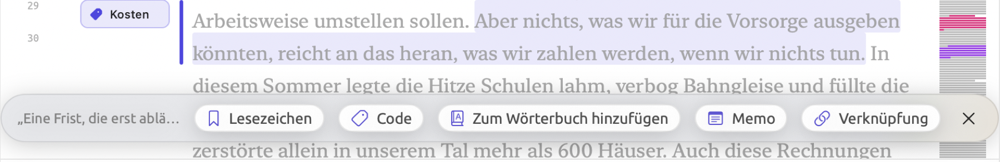
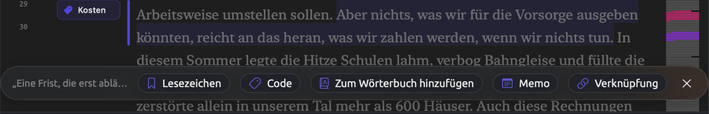
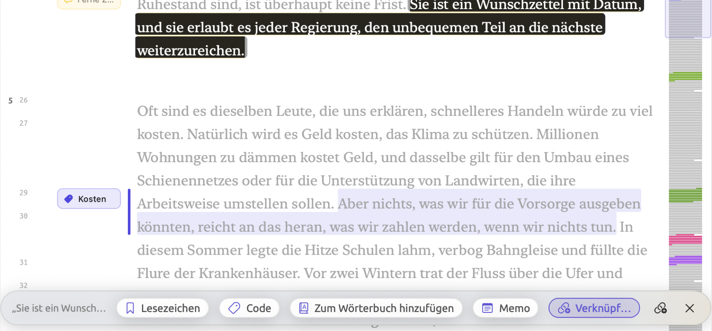

Während Sie den Text des Dokuments bearbeiten, ist die Leiste ausgeblendet, und die Befehle sind deaktiviert.
Das Menü Dokument enthält drei weitere Befehle zum Kodieren. In-vivo-Code (⇧⌘V) kodiert die ausgewählte Textstelle mit einem Code, der nach ihren Wörtern benannt ist (siehe Eine Textstelle kodieren in diesem Kapitel). Automatisch kodieren… (⇧⌘A) kodiert automatisch alle Textstellen, die eine bestimmte Lens annotiert (siehe Textstellen automatisch kodieren in diesem Kapitel). Verknüpfung abbrechen (⌥⇧⌘L) bricht eine Verknüpfung ab, die Sie gerade anlegen.
Der Tab Kodierung im Inspektor
Der Tab Kodierung des Inspektors (Etikettsymbol, ⌥⌘3) bezieht sich auf das aktive Dokument. Er enthält sechs Facetten:
| Facette | Inhalt | Siehe |
|---|---|---|
| Codes | Das Codesystem mit der Zahl der Kodierungen jedes Codes in diesem Dokument. Hier legen Sie Codes an, bearbeiten sie, führen sie zusammen und sehen die Code-Sets. | Die Facette Codes |
| Kodierungen | Die Kodierungen und Memos dieses Dokuments in Lesereihenfolge, mit den Attributwerten jeder Kodierung | Die Facette Kodierungen |
| Verknüpfungen | Die Verknüpfungen mit mindestens einem Ende in diesem Dokument | Einer Verknüpfung folgen |
| Code-Statistik | Wie oft jeder Code im Dokument verwendet wird, wie viel Text er abdeckt und welche Codes sich überschneiden | Code-Häufigkeiten und Abdeckung in Kapitel 13, Codes auswerten |
| Porträt | Zwei Bilder der Kodierung des Dokuments, Mosaik und Codelinie | Porträt in Kapitel 13, Codes auswerten |
| Code-Skizze | Eine Wortskizze, die die Verwendungen eines Wortes nach den umgebenden Codes aufteilt | Code-Skizze in Kapitel 12, Wortskizze |
Lesezeichen finden Sie dagegen im Tab Text (siehe Lesezeichen weiter unten in diesem Kapitel).
Das Projektregal
Von den zehn Ansichten Ihres Projektregals enthalten vier Ihre Codes und Annotationen, nämlich Codebuch, Kodierungen, Memos und Verknüpfungen. Öffnen Sie diese vier Ansichten über Projekt in der Seitenleiste, umfassen sie das gesamte Projekt; öffnen Sie sie dagegen im Tab eines Sets oder Tags, umfassen sie nur die Dokumente dieses Sets oder Tags. Mehr zu den Ansichten selbst und ihren Tabs finden Sie unter Das Projektregal in Kapitel 3, Projekte und Dokumente.
Dieses Kapitel stellt Codebuch, Memos und Verknüpfungen vor. Die Ansicht Kodierungen listet alle kodierten Textstellen im jeweiligen Bereich auf und lässt Sie diese nach Attributwerten filtern. Sie wird zusammen mit Code-Statistik, Code-Matrix und Beziehungen unter Die Ansicht Kodierungen in Kapitel 13, Codes auswerten beschrieben.
Codes
Einen Code anlegen
Codes legen Sie entweder in der Facette Codes des Inspektors oder in der Ansicht Codebuch an. Beim eigentlichen Kodieren wählen Sie Textstellen in der Leseansicht aus und weisen ihnen über die Code-Palette Codes zu. Wie Sie während der Analyse direkt aus der Palette einen Code anlegen, beschreibt Eine Textstelle kodieren weiter unten. In der Regel hilft es, erste Codes für Ihre Fragen vorab anzulegen; Sie können während der Analyse aber ebenso weitere Codes aus dem Material heraus hinzufügen. Codebücher verändern sich meist noch während der ersten Dokumente, und Sie können Codes jederzeit bearbeiten und zusammenführen (siehe Codes verwalten weiter unten in diesem Kapitel).
So legen Sie einen Code im Inspektor an:
- Öffnen Sie ein Dokument.
- Klicken Sie im Inspektor auf den Tab Kodierung und dann auf Codes.
- Klicken Sie auf + rechts neben Codesystem.
- Geben Sie im Dialog Neuer Code unter Name einen Namen ein.
- Stellen Sie die übrigen Felder ein, wie unter Die Felder eines Codes unten beschrieben, oder lassen Sie sie, wie sie sind.
- Klicken Sie auf Sichern.
Um einen Untercode anzulegen, klicken Sie in der Facette Codes mit der rechten Maustaste auf den übergeordneten Code und wählen Untercode hinzufügen. Es öffnet sich derselbe Dialog, und der neue Code erscheint unter seinem übergeordneten Code.
In der Ansicht Codebuch legt ein Klick auf Code hinzufügen unter der Liste einen Code auf oberster Ebene an. Ein Rechtsklick auf einen übergeordneten Code bietet auch dort Untercode hinzufügen an. Mit dem Menübefehl Projekt ▸ Code hinzufügen öffnen Sie den Dialog für einen Code auf oberster Ebene, mit Projekt ▸ Untercode hinzufügen den Dialog für einen Untercode des Codes, der in der Facette Codes oder in der Ansicht Codebuch ausgewählt ist.
Sichern bleibt deaktiviert, bis der Code einen Namen hat (der Tooltip lautet Name ist leer). Geben Sie jedem Code einen eindeutigen Namen, denn zwei gleichnamige Codes lassen sich in Menüs und Tabellen nur schwer auseinanderhalten.
Die Felder eines Codes
Die Dialoge Neuer Code und Code bearbeiten haben dieselben Felder. In „Klimadebatte“ hat jeder Themencode, auch „Fristen“, eine eigene Farbe, das Format Hervorheben, den Geltungsbereich Projekt und unter Beschreibung einen Text, der sagt, worauf sich der Code bezieht. Die Beschreibung von „Fristen“ lautet zum Beispiel „Zieljahre, Countdowns und Stichtage, ob gefordert, versprochen oder kritisiert.“
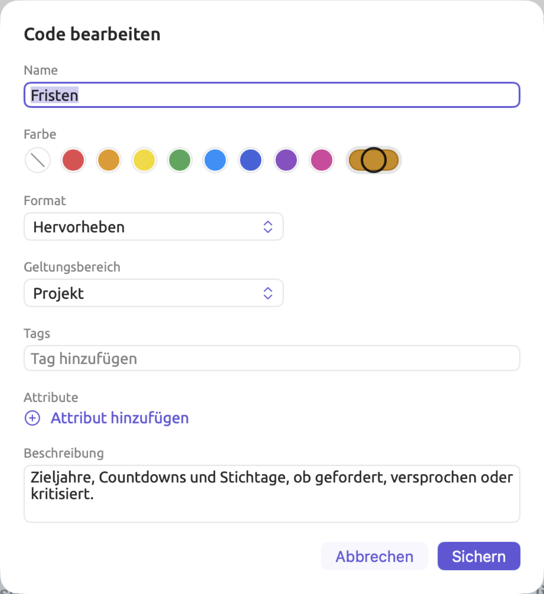
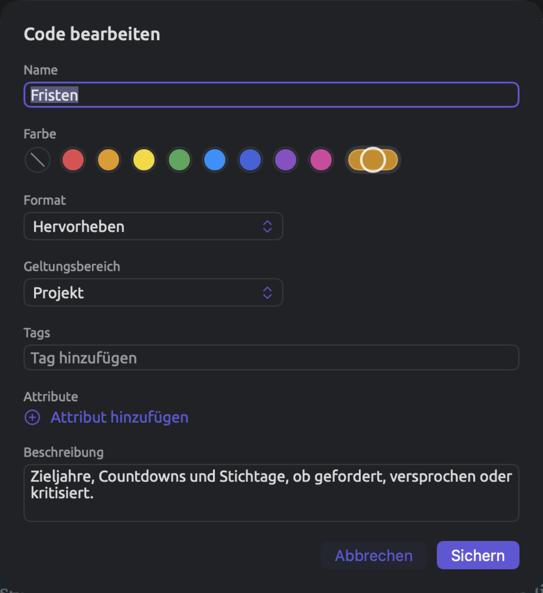
Mit Farbe legen Sie fest, wie der Code in der Leseansicht aussieht. Zur Wahl stehen Keine Farbe oder acht Farben von Rot bis Rosa. Reicht keine davon aus, gibt es ganz rechts das Farbwahlfeld Beliebige Farbe wählen. Ein Code mit Keine Farbe erscheint im Text in der Akzentfarbe des Themas und in der Randspalte gelb. Geben Sie mehreren Codes beim Kodieren unterschiedliche Farben, damit überlappende Kodierungen im Text und in der Randspalte nicht ineinanderfließen.
Format bestimmt, wie die Leseansicht kodierten Text darstellt. Hervorheben füllt den Hintergrund in der Farbe des Codes; Unterstreichen zieht eine waagerechte Linie in dieser Farbe unter den Text, und Umrahmt zeichnet einen Rahmen um den Text. Wo sich Kodierungen überschneiden, lassen sie sich mit verschiedenen Formaten besser auseinanderhalten; eine hervorgehobene Wendung innerhalb eines Rahmens ist zum Beispiel weiterhin gut zu erkennen. Das gewählte Format gilt für alle Anwendungen des Codes, auch für kodierte Memos.
Den Geltungsbereich sowie die Tags und Attribute, die Sie einem Code mitgeben können, behandeln eigene Abschnitte dieses Kapitels, nämlich Wo ein Code verwendet werden kann, Tags an Codes und Codes mit Attributen.
Unter Beschreibung können Sie festhalten, was ein Code umfasst, und Regeln angeben, damit er während der gesamten Forschungsarbeit einheitlich vergeben wird. Die Beschreibung erscheint in der Ansicht Codebuch unter dem Namen des Codes und geht in den Export des Codebuchs ein.
Wo ein Code verwendet werden kann
Das Menü Geltungsbereich bietet für jeden Code drei mögliche Geltungsbereiche:
- Projekt macht den Code in allen Dokumenten des Projekts verfügbar. Neu angelegte Codes haben zunächst den Geltungsbereich Projekt.
- Dokumentset beschränkt den Code auf die Dokumente eines Sets. Wählen Sie das Set im darunterliegenden Aufklappmenü Dokumentset. Auch ein intelligentes Set, dessen Dokumente anhand von Bedingungen bestimmt werden, kann der Geltungsbereich sein (siehe Intelligente Sets in Kapitel 8, Sets, Gruppen, Tags und Attribute). Hat der Code den Geltungsbereich Dokumentset, stellt LemmaLoom ihn bereit, sobald neue Dokumente ins Set kommen, und bietet ihn in Dokumenten, die nicht mehr zum Set gehören, nicht mehr an.
- Dokument beschränkt den Code auf ein bestimmtes Dokument; er gilt dann für dieses Dokument und seine Übersetzungen. Wählen Sie das Dokument im darunterliegenden Aufklappmenü Dokument.
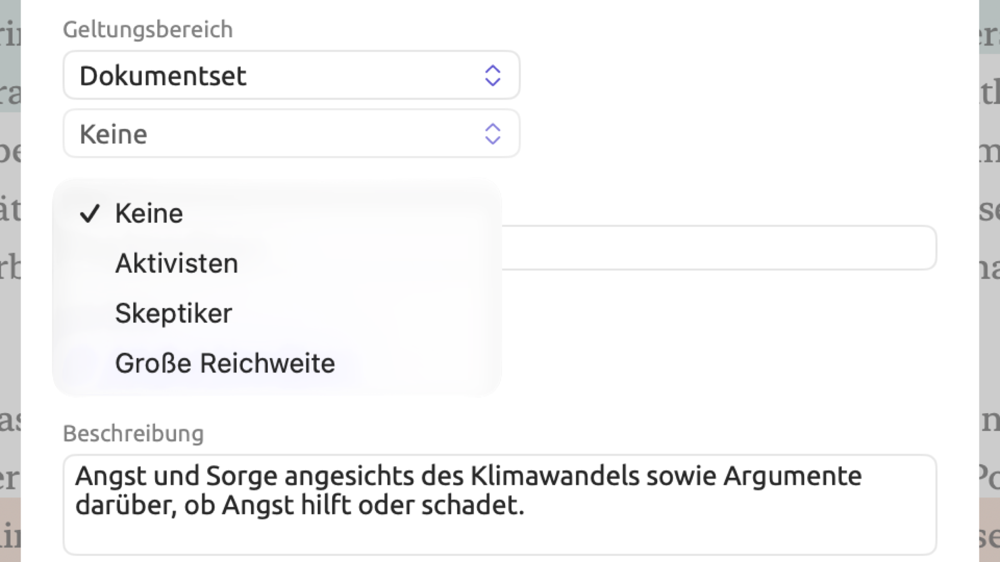
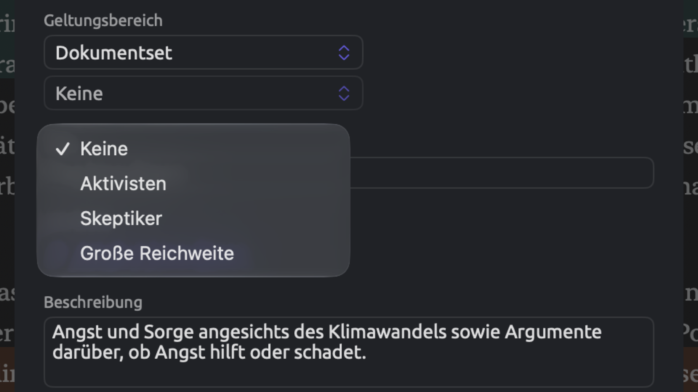
Die Code-Palette, die Facette Codes und der Dialog Automatisch kodieren zeigen in einem Dokument die Codes, deren Geltungsbereich es einschließt. Bei den Geltungsbereichen Dokumentset und Dokument müssen Sie zuerst im jeweiligen Aufklappmenü ein Set oder ein Dokument wählen. Die Ansicht Codebuch zeigt Codes jedes Geltungsbereichs.
Meist genügt der Geltungsbereich Projekt. Für Codes, die nur in einem Teil der Dokumente sinnvoll sind, etwa einen Code für Protestformen im Set „Aktivisten“, können Sie aber den Geltungsbereich Dokumentset oder Dokument verwenden. Die Sprechercodes, die LemmaLoom beim Transkribieren anlegt, sind Dokumentcodes, weil sie zu einzelnen Dokumenten gehören (den Transkripten von Aufnahmen). So ist „Sprecher“ mit den Untercodes „Moderation“, „Aktivistin“ und „Skeptiker“ im Projekt „Klimadebatte“ ein Dokumentcode von „Radiodebatte“; die Palette bietet ihn deshalb nicht an, während Sie „Uns läuft die Zeit davon“ kodieren (siehe Sprecher in Kapitel 4, Material importieren).
Verengen Sie den Geltungsbereich eines Codes später, bleiben die bisherigen Kodierungen im Text und in jeder Zählung unverändert. In Dokumenten außerhalb des verengten Geltungsbereichs lassen sie sich nur über die Facette Kodierungen oder die Ansicht Kodierungen des Projektregals löschen (siehe Einen Code von einer Textstelle entfernen weiter unten in diesem Kapitel). Löschen Sie das Set eines Codes, müssen Sie dem Code einen neuen Geltungsbereich geben, bevor Sie ihn wieder vergeben. Wird ein Dokument gelöscht, werden seine Dokumentcodes mitgelöscht. Wird eine Übersetzung gelöscht, gehen ihre Dokumentcodes an das Original über.
Wie Wortskizzen für ein Set oder das Projekt mit Dokumentcodes umgehen, erfahren Sie unter Dokumentcodes in Kapitel 12, Wortskizze.
Untercodes und der Codebaum
In der Facette Codes und in der Ansicht Codebuch sind die Codes jeder Ebene des Baums alphabetisch sortiert, und Untercodes stehen eingerückt unter ihrem übergeordneten Code.
Untercodes verwenden Sie, wenn Ihre Forschung von einer Hierarchie profitiert. So können Sie ein breites Thema nach den verschiedenen Formen aufteilen, in denen es auftritt. Im Beispielprojekt „Klimadebatte“ ist „Dringlichkeit“ zum Beispiel in „Fristen“ für Zieljahre und Stichtage und „Kipppunkte“ für Schwellen aufgeteilt, jenseits derer Schäden als unumkehrbar gelten. Fehlt eine solche natürliche Hierarchie, genügt eine einfache flache Liste.
Ein übergeordneter Code ist ein Code wie jeder andere. Sie vergeben ihn, wenn eine Textstelle zum breiteren Thema gehört, aber zu keiner der Formen passt, die seine Untercodes erfassen. In „Das Versprechen der Bürgermeisterin“ ist „Den Luxus eines langsamen Starts haben wir nicht“ mit „Dringlichkeit“ kodiert, weil der Satz weder zu „Kipppunkte“ noch zu „Fristen“ gehört. Die Zahl neben einem übergeordneten Code zählt nur die Textstellen, die mit ihm selbst kodiert sind.
Um einen Code zu verschieben, ziehen Sie ihn in der Facette Codes oder in der Ansicht Codebuch auf seinen neuen übergeordneten Code, oder Sie klicken mit der rechten Maustaste darauf und wählen Verschieben nach. Das Untermenü Verschieben nach zeigt den Baum ohne den verschobenen Code und seine Untercodes. Oberste Ebene ganz oben in der Liste löst den Code von seinem übergeordneten Code. Projekt ▸ Verschieben nach tut dasselbe für den ausgewählten Code. Der Code behält seine Kodierungen, und seine Untercodes wandern mit.
Codes vergeben
Eine Textstelle kodieren
Im vierten Absatz von „Uns läuft die Zeit davon“ ist „Fristen“ drei Zielen zugewiesen: „Netto-Null bis 2050. Kohleausstieg bis zum Ende des Jahrzehnts. Halbierung der Emissionen bis 2030.“ Die in der Abbildung ausgewählte Textstelle aus „Bauern sind nicht der Feind“ ist dagegen mit „Kosten“ und mit „Verantwortung“ kodiert, weil sie davon handelt, wer für die Wende bezahlt und wer handeln soll. Die Palette zeigt deshalb neben beiden ein Häkchen.
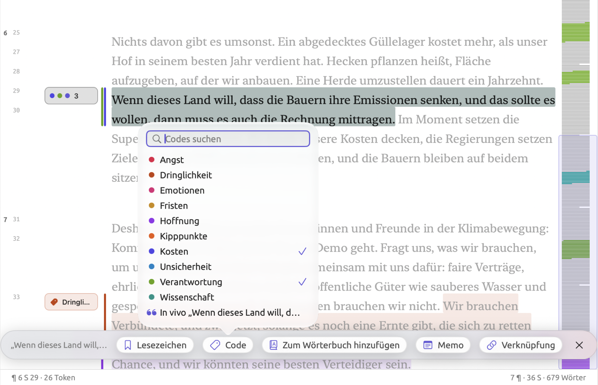
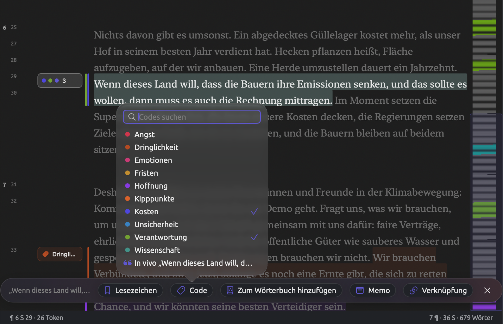
So kodieren Sie eine Textstelle:
- Wählen Sie eine Textstelle aus, klicken Sie in der Randspalte auf eine Absatz- oder Satznummer, oder klicken Sie auf ein einzelnes Wort.
- Klicken Sie in der Auswahlleiste auf Code, oder drücken Sie ⇧⌘C.
- Klicken Sie in der Palette auf den Code. Hat er Attribute, fragt zuerst ein Dialog nach ihren Werten (siehe Codes mit Attributen weiter unten in diesem Kapitel).
Was sich auswählen lässt, hängt vom Dokument ab. Wörter und Satznummern lassen sich erst auswählen, wenn das Dokument indiziert ist. Textstellen können Sie in allen Dokumenten auswählen, auch in solchen, die in einer anderen Sprache als Englisch, Deutsch oder Chinesisch geschrieben sind.
Die Palette zeigt alle Codes, die im aktuellen Dokument verwendbar sind, in alphabetischer Reihenfolge. Jeder Eintrag zeigt den Namen des Codes mit seiner Farbe. Da die Liste flach und nicht hierarchisch ist, steht „Fristen“ irgendwo nach „Emotionen“ und vor „Hoffnung“. Beim Öffnen der Palette hat das Feld Codes suchen den Fokus; tippen Sie einen Teil eines Namens ein, wird die Liste kürzer, und der oberste Treffer ist hervorgehoben. Der Zeilenschalter vergibt den hervorgehobenen Eintrag an die Textstelle, und mit ↑ und ↓ verschieben Sie die Hervorhebung, auch bevor Sie suchen. Mit ein paar Buchstaben und dem Zeilenschalter kodieren Sie eine Textstelle also allein über die Tastatur.
Nachdem Sie einer Textstelle einen Code zugewiesen haben, bleibt die Palette geöffnet, sodass Sie derselben Textstelle gleich weitere Codes zuweisen können. Sie schließen die Palette mit der Esc-Taste oder mit einem Klick an eine beliebige Stelle außerhalb der Palette.
Neben jedem Code, der bereits einen Teil der ausgewählten Textstelle abdeckt, erscheint ein Häkchen. Klicken Sie auf einen Code mit Häkchen oder drücken Sie den Zeilenschalter, während er hervorgehoben ist, um diesen Code von der Textstelle zu entfernen (siehe Einen Code von einer Textstelle entfernen unten). Um zu ändern, welchen Teil der Textstelle eine Kodierung abdeckt, entfernen Sie die vorhandene Kodierung und kodieren neu. Einer vorhandenen Kodierung einen anderen Code geben Sie mit Code ändern in der Facette Kodierungen (siehe Die Facette Kodierungen unten).
Codes, die Ihnen mitten in der Analyse einfallen, können Sie über die Palette direkt aus dem Dokument heraus ins Codebuch aufnehmen. Trägt keiner der angezeigten Codes den Namen, den Sie eingetippt haben, erscheint am Ende der Liste Code „…“ hinzufügen; dieser Eintrag legt einen Code mit diesem Namen an und vergibt ihn. In vivo „…“ steht immer an letzter Stelle; es legt aus dem ausgewählten Text einen In-vivo-Code an, benennt ihn nach diesem Text und vergibt ihn. Wählen Sie zum Beispiel in „Uns läuft die Zeit davon“ die Wendung „ein Wunschzettel mit Datum“ aus, bietet die Palette In vivo „ein Wunschzettel mit Datum“ an. Dokument ▸ In-vivo-Code (⇧⌘V) tut dasselbe ohne die Palette. Namen mit mehr als 60 Zeichen werden gekürzt und enden mit Auslassungspunkten. Hat ein Code, den Sie in diesem Dokument verwenden können, bereits diesen Namen, ohne Rücksicht auf Groß- und Kleinschreibung, wird dieser Code vergeben, statt dass ein neuer angelegt wird.
Codes, die Sie auf diese Weise oder als In-vivo-Code anlegen, stehen auf der obersten Ebene des Codebuchs, mit Keine Farbe, im Format Hervorheben und mit dem Geltungsbereich Projekt. Geben Sie ihnen eine Farbe und einen Platz im Baum, wenn Sie Ihr Codebuch das nächste Mal durchsehen (siehe Codes verwalten weiter unten in diesem Kapitel). In-vivo-Codes können in den ersten Kodierdurchgängen nützlich sein, weil sie nah am Wortlaut des Materials bleiben; sobald sich Ihre Codes gefestigt haben, können Sie sie umbenennen oder zusammenführen. Bearbeiten ▸ Code anwenden widerrufen (⌘Z) entfernt die Kodierung und den neuen Code.
So werden Kodierungen dargestellt
Ist die Lens Codes aktiviert, wie beim Öffnen eines Dokuments, erscheint jede Kodierung in Farbe und Format ihres Codes. Neben jeder kodierten Textstelle steht in der Randspalte ein schmaler Balken in der Farbe des Codes, und am Anfang der Textstelle zeigt eine kleine Annotation den Namen des Codes. Überlappende Kodierungen stehen nebeneinander, bis zu drei Balken breit; alle weiteren Kodierungen teilen sich den dritten Balken. Halten Sie den Mauszeiger auf einen Balken, um die zugehörige Textstelle hervorzuheben; ein Klick auf einen Balken oder auf die Annotation des Codes wählt die Textstelle aus.
Würden sich mehrere Annotationen in der Randspalte fast auf derselben Höhe überlagern, zeigt LemmaLoom für sie nur eine einzige Annotation, wie die neben der ausgewählten Textstelle in der Abbildung oben. Kodierungen, Memos, Lesezeichen und Enden von Verknüpfungen werden auf dieselbe Weise zusammengefasst; jede zusammengefasste Annotation hat farbige Punkte für die ersten drei Einträge und nennt die Zahl der Einträge. Halten Sie den Mauszeiger auf eine zusammengefasste Annotation oder klicken Sie darauf, listet sie die einzelnen Einträge auf, und ein Klick auf einen Eintrag wählt seine Textstelle aus; bei einem Ende einer Verknüpfung führt der Klick zum anderen Ende.
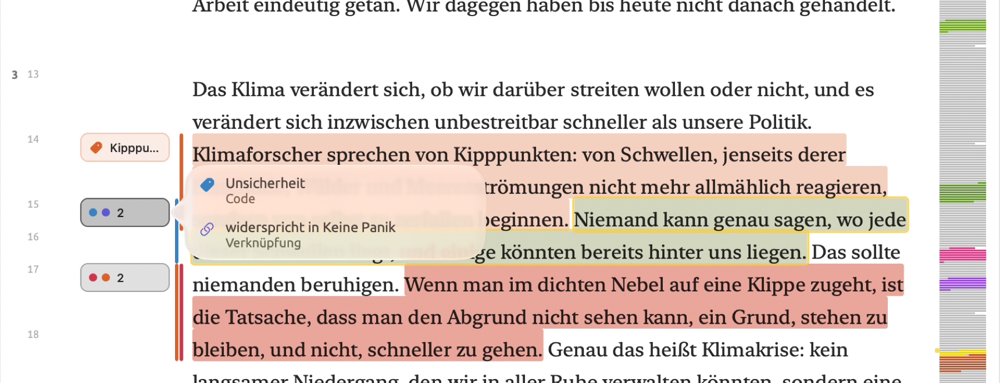
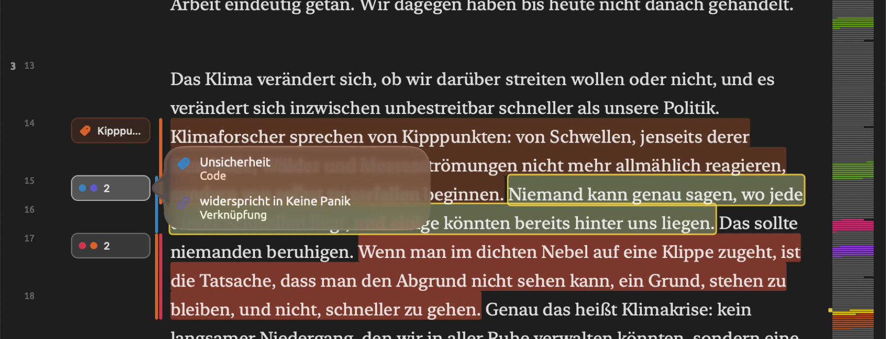
Deaktivieren Sie die Lens Codes, verschwinden alle Markierungen der Kodierungen auf einmal (siehe Codes und Lesezeichen in Kapitel 6, Lenses).
Einen Code von einer Textstelle entfernen
- Wählen Sie die Textstelle aus. Ein Klick auf ihren Balken oder ihre Annotation in der Randspalte wählt genau den kodierten Text aus.
- Öffnen Sie die Palette (⇧⌘C).
- Klicken Sie auf den Code mit dem Häkchen.
Der Klick auf den Code löscht alle Kodierungen dieses Codes, die Ihre Auswahl überlappen, auch wenn sie über die Auswahl hinausreichen. Wählen Sie deshalb sorgfältig aus, wenn mehrere Kodierungen desselben Codes dicht beieinanderliegen.
Um eine bestimmte Kodierung statt aller überlappenden zu entfernen, verwenden Sie die Facette Kodierungen. Klicken Sie auf die Kodierung und dann unter ihrem Text auf Löschen, oder klicken Sie mit der rechten Maustaste auf die Kodierung und wählen Sie Kodierung löschen. In der Ansicht Kodierungen des Projektregals klicken Sie mit der rechten Maustaste auf das Segment und wählen Kodierung löschen.
Mit einer Kodierung werden auch ihre Attributwerte und ihre Kopien in den Übersetzungen des Dokuments gelöscht.
Die Facette Kodierungen
Die Facette Kodierungen zeigt alle Kodierungen des aktuellen Dokuments in Lesereihenfolge. Der Umschalter oben wechselt zwischen Kodierungen und Memos. Beide nennen ihre Anzahl in Klammern neben der Beschriftung, bei „Uns läuft die Zeit davon“ zum Beispiel Kodierungen (13). Die Memos behandelt Memos lesen, bearbeiten und löschen weiter unten in diesem Kapitel ausführlicher.
Jede Kodierung hat eine eigene Zeile mit Farbe und Namen des Codes, der Position und der ersten Zeile ihres Textes. Absatz 4, Satz 2 wird als ¶4·2 angegeben. Bei einem Dokument ohne Sätze, etwa einem nicht indizierten, steht nur der Absatz, wie in ¶4. Wenn Sie auf eine Kodierung klicken, scrollt LemmaLoom die Leseansicht zur kodierten Textstelle. Der Klick klappt außerdem die Zeile auf; sie zeigt dann bis zu vier Zeilen Text, die gesetzten Attributwerte und eine Schaltfläche Löschen. Ein weiterer Klick klappt die Kodierung wieder zu. Ein Rechtsklick bietet Zur Quelle springen, Code ändern und Kodierung löschen an.
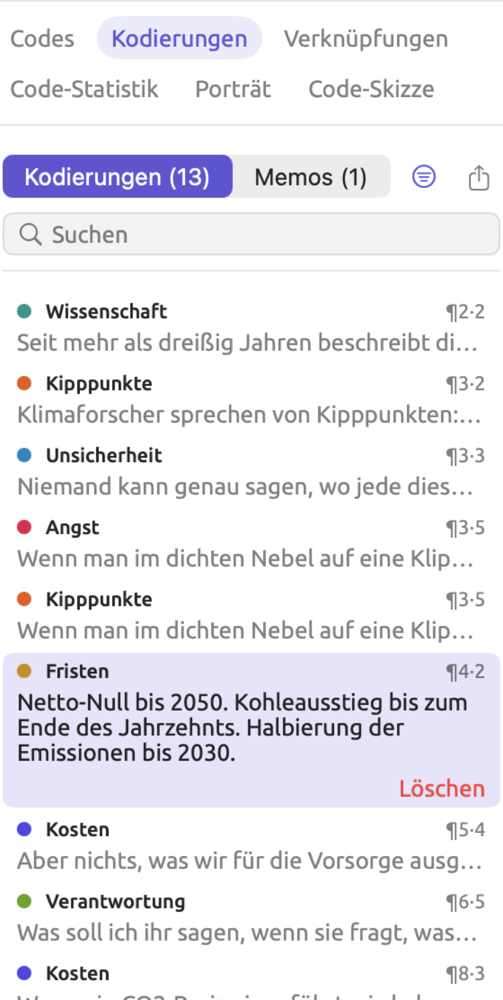
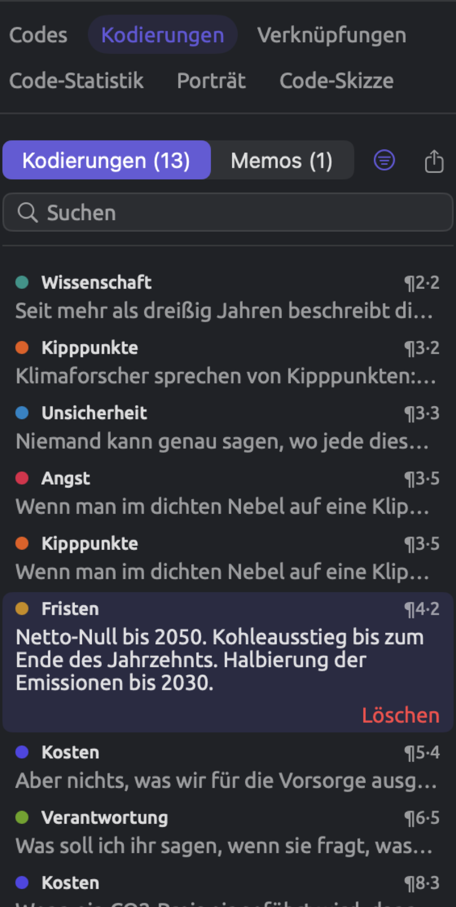
Code ändern zeigt die Codes, die Sie vergeben können, hierarchisch als Baum. Wählen Sie einen aus, erhalten die Kodierung und ihre Kopien in Übersetzungen diesen Code. Die Kodierung behält ihren Wert für jedes Attribut, das der neue Code mit gleichem Namen und Typ hat, und verliert die Werte aller übrigen Attribute. Mit Bearbeiten ▸ Code ändern widerrufen (⌘Z) machen Sie den Wechsel samt Werten rückgängig. Die Ansicht Kodierungen des Projektregals bietet im Kontextmenü jedes Segments einen entsprechenden Befehl.
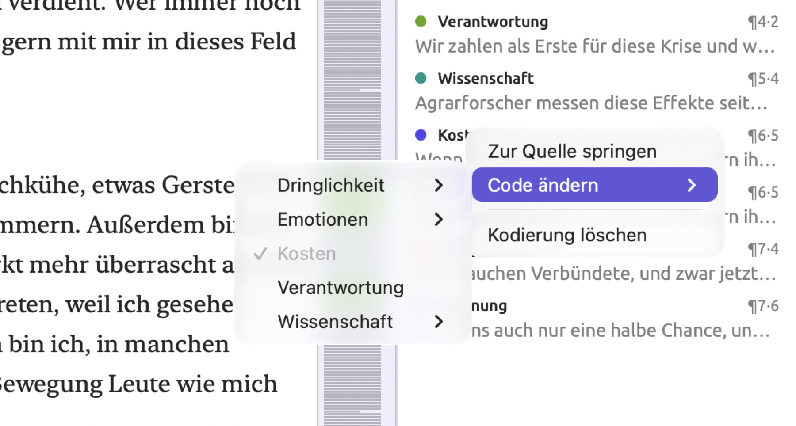
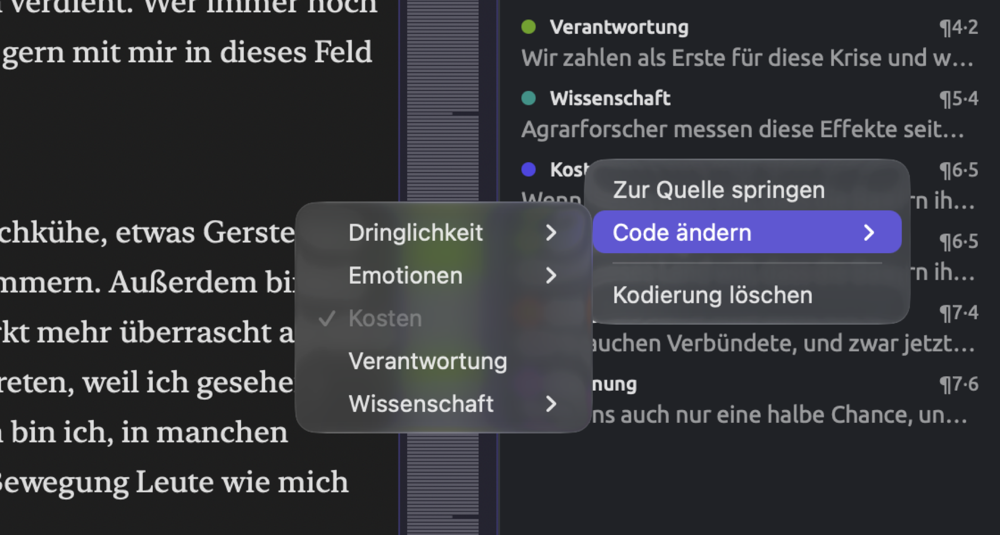
Über der Liste der Kodierungen gibt es drei weitere Bedienelemente:
- Mit Suchen grenzen Sie die Liste ein, indem Sie in den Codenamen oder im Text suchen.
- Nach Code filtern, die Trichter-Schaltfläche, beschränkt die Anzeige auf die Kodierungen eines gewählten Codes. Mit Alle Codes sehen Sie wieder alle Kodierungen.
- Mit Exportieren exportieren Sie alle angezeigten Kodierungen als CSV-Datei mit den Spalten Code, Stelle, Anfang, Ende und Text. Anfang und Ende geben in Zeichen an, wo die Textstelle liegt, gezählt vom Anfang des Dokuments.
Codes mit Attributen
Manchmal braucht ein Code mehr Abstufung als Ja oder Nein. In einer Studie über Angst in Texten zum Klima könnten Sie zum Beispiel für jede Kodierung von Angst festhalten, wie stark sie ist. Das Attribut hieße dann „Intensität“, die Auswahlwerte könnten „Niedrig“, „Mittel“ und „Hoch“ sein, und jede Kodierung von „Angst“ hätte einen davon. In der Regel verwenden Sie ein Attribut für eine qualitative Eigenschaft, die jede kodierte Textstelle eines Codes hat (hier, wie stark die Emotion empfunden wird). Verwenden Sie einen Untercode, wenn eine weitere Ebene eines Codes als eigener Eintrag in der Palette und in den Code-Tabellen erscheinen soll.
So fügen Sie einem Code ein Attribut hinzu:
- Öffnen Sie den Dialog des Codes, zum Beispiel mit einem Doppelklick auf den Code in der Facette Codes.
- Klicken Sie unter Attribute auf Attribut hinzufügen.
- Geben Sie den Namen des Attributs ein. Während Sie tippen, werden Namen von Attributen vorgeschlagen, die es im Projekt schon gibt, und wenn Sie einen davon wählen, übernehmen Sie auch dessen Typ und Auswahlwerte.
- Wählen Sie im Menü, das Text zeigt, neben dem Namen einen Typ, nämlich Text, Ganzzahl (eine ganze Zahl), Dezimalzahl, Boolescher Wert (wahr oder falsch), Datum oder Auswahl (ein Wert aus einer Liste).
- Bei Auswahl geben Sie die Auswahlwerte in die erscheinenden Zeilen ein, einen pro Zeile.
- Klicken Sie auf Sichern.
Über Attribut hinzufügen stehen die vorhandenen Attribute des Codes, jedes mit seinem Typ. Die Stift-Schaltfläche (Bearbeiten) öffnet den Dialog Attribut bearbeiten, in dem Sie Namen, Auswahlwerte und Beschreibung des Attributs ändern können, außerdem den Typ, soweit die bereits erfassten Werte es zulassen. Seine Schaltfläche Sichern übernimmt die Änderungen sofort, ohne dass Sie sie im Dialog des Codes bestätigen müssen; sie bleiben auch erhalten, wenn Sie den Dialog des Codes danach abbrechen. Die Minus-Schaltfläche (Attribut entfernen) löscht das Attribut mit allen seinen Werten, sobald Sie den Code sichern. Mehr zu den genannten Typen finden Sie unter Attributtypen in Kapitel 8, Sets, Gruppen, Tags und Attribute.
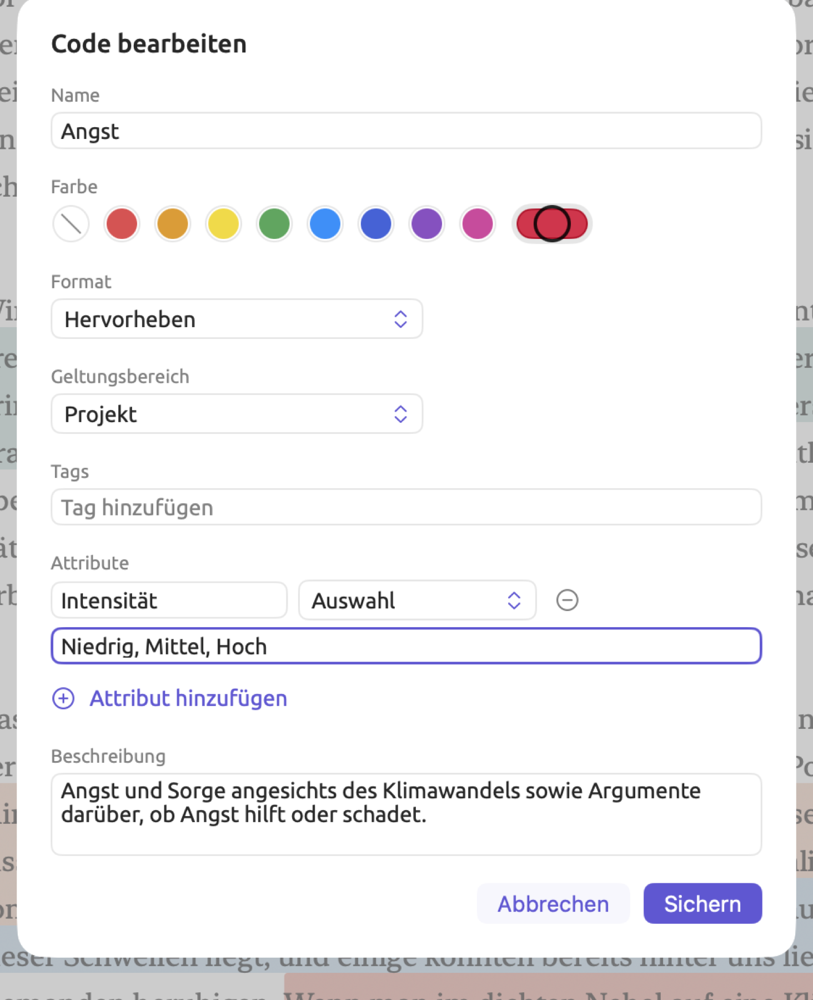
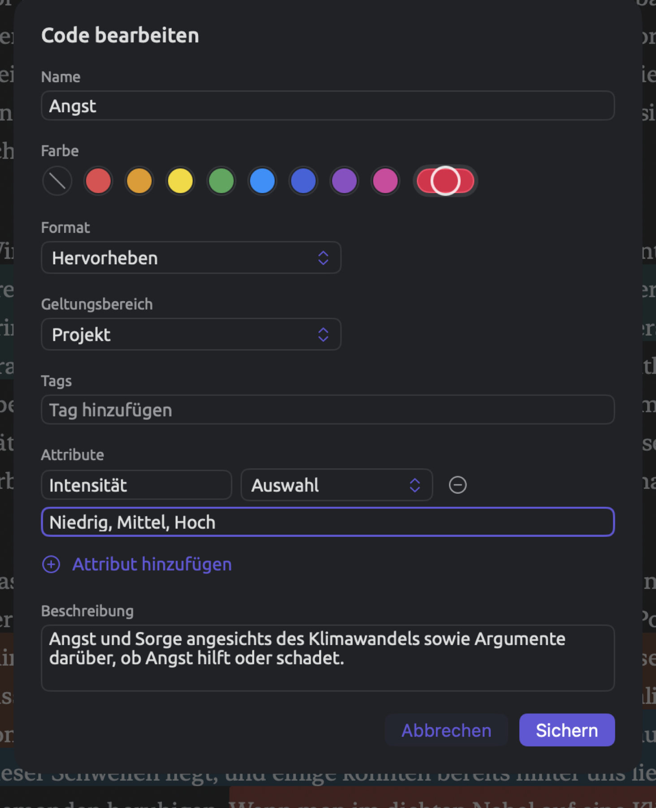
Wenn Sie einen Code mit Attributen einer Textstelle zuweisen, fragt LemmaLoom die Attribute zuerst in einem kleinen Dialog ab. Tragen Sie die Werte ein, die Sie brauchen, und klicken Sie auf Code anwenden.
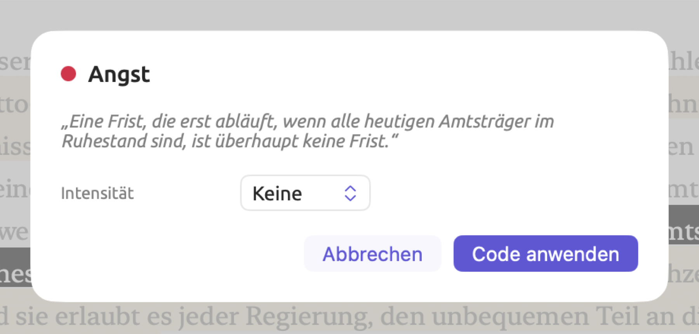
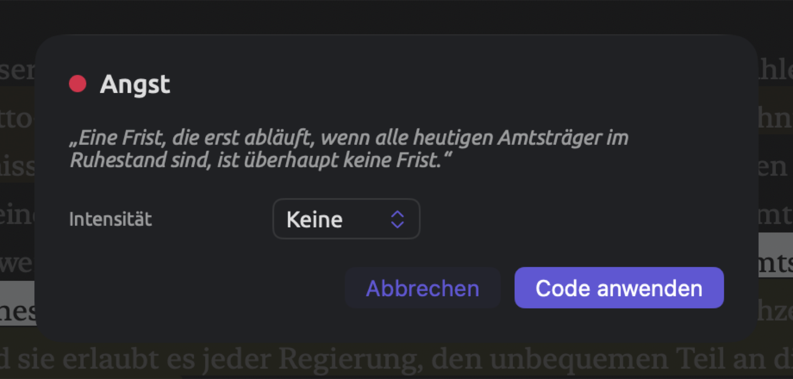
Nachdem Sie einen Code mit Attributen vergeben haben, können Sie die Werte ändern, indem Sie in der Facette Kodierungen auf die Kodierung klicken. Jede Änderung an einem Bedienelement wird sofort gesichert.
Die Ansicht Kodierungen des Projektregals zeigt die Attributwerte des ausgewählten Segments mit Bedienelementen, mit denen Sie sie direkt ändern. Außerdem lassen sich die Segmente dieser Ansicht nach ihren Werten filtern. Der Abschnitt Attribut-Aufschlüsselungen der Code-Statistik, in der Facette wie in der Ansicht des Projektregals, schlüsselt die Kodierungen jedes Codes nach Attributwerten auf. Siehe Attribut-Aufschlüsselungen in Kapitel 13, Codes auswerten. Im Abfrageeditor können Sie Kodierungen anhand ihrer Attributwerte abfragen (siehe Kapitel 15, Eine Abfrage erstellen).
Ein kodiertes Memo, das einem Code mit Attributen zugeordnet ist, hat eigene Werte (siehe Kodierte Memos weiter unten in diesem Kapitel).
Kodierungen in Übersetzungen
Durch Übersetzen legen Sie Fassungen Ihrer Dokumente in anderen Sprachen an. Ein Beispiel ist „Uns läuft die Zeit davon (Englisch)“, eine englische Übersetzung, die in der Seitenleiste unter ihrem Original steht. Kodieren Sie eine Textstelle in „Uns läuft die Zeit davon“, gilt die Kodierung auch für die entsprechende Textstelle der Übersetzung, und umgekehrt. Memos, Verknüpfungen und Lesezeichen aus einem der beiden Dokumente werden ebenfalls kopiert. Alle Kopien bleiben miteinander verbunden.
Wie genau eine Kopie auf ihre Textstelle passt, hängt davon ab, wie die Sätze der beiden Texte einander zugeordnet sind (mehr dazu unter Wo Kopien gespeichert werden in Kapitel 9, Übersetzungen und geteilte Ansicht). Wird eine Kopie gelöscht oder bearbeitet, folgen alle anderen Kopien dieser Kodierung. Eine Kodierung und ihre Kopien haben außerdem dieselben Attributwerte.
Auswertungen von Sets oder Projekten verwenden standardmäßig die Originaldokumente. Eine Kodierung und ihre Kopien zählen im Ergebnis deshalb nur einmal (siehe Übersetzungen in Auswertungen in Kapitel 9, Übersetzungen und geteilte Ansicht).
Codes verwalten
Einen Code bearbeiten
So öffnen Sie den Dialog Code bearbeiten:
- In der Facette Codes öffnet ihn ein Doppelklick auf den Code, ebenso ein Rechtsklick mit der Wahl von Bearbeiten.
- In der Ansicht Codebuch genügt ein Doppelklick auf den Code, ein Klick auf Bearbeiten neben dem Codenamen im Detailbereich oder ein Rechtsklick mit der Wahl von Bearbeiten.
An beiden Stellen wählt ein einfacher Klick einen Code aus, und der Zeilenschalter öffnet dann den Dialog Code bearbeiten. Nehmen Sie die nötigen Änderungen vor und klicken Sie auf Sichern; die Änderungen erscheinen sofort in allen geöffneten Dokumenten.
Die Facette Codes
Die Facette Codes listet unter der Überschrift Codesystem die Codes auf, deren Geltungsbereich das aktive Dokument einschließt. Für das aktive Dokument „Uns läuft die Zeit davon“ sind das alle Codes in „Klimadebatte“ außer „Sprecher“ und seinen Untercodes, die zu „Radiodebatte“ gehören. „Kosten“ und „Unsicherheit“ haben jeweils ein eigenes Memo und zeigen deshalb ein Notizsymbol, und unter dem Codesystem erscheint das Code-Set „Argumente“.
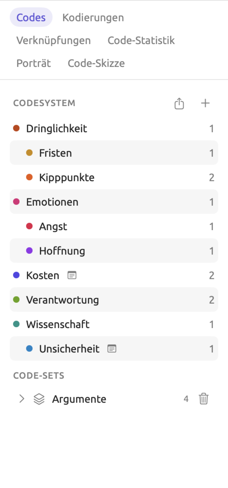
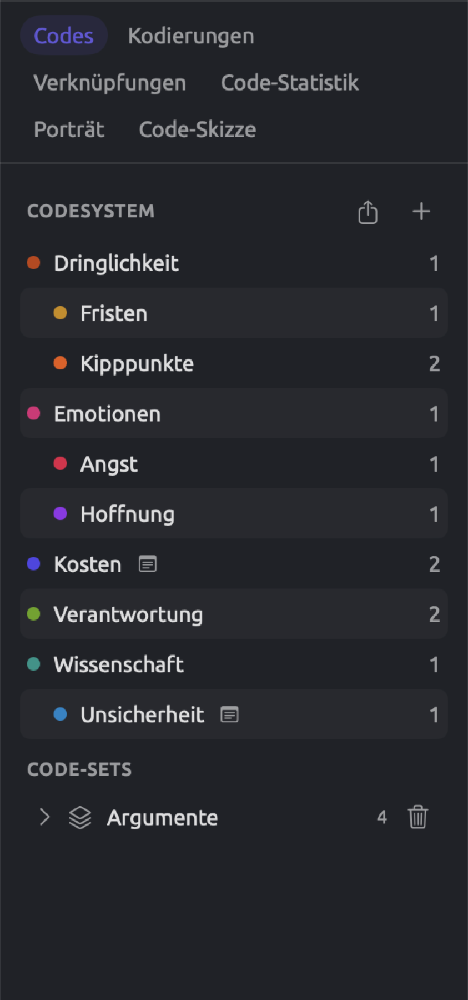
Jede Zeile zeigt von links nach rechts:
- Farbe und Namen des Codes;
- ein Notizsymbol, wenn dem Code selbst ein Memo zugeordnet ist, was nur in einem importierten Projekt vorkommen kann (siehe Memos zu Dokumenten, Codes und dem Projekt weiter unten in diesem Kapitel); und
- ganz rechts, wie oft der Code in diesem Dokument verwendet wurde (einschließlich der kodierten Memos dieses Codes). Ein Klick auf die Zahl (Kodierungen anzeigen) zeigt die Kodierungen in der Facette Kodierungen.
Die Überschrift hat zwei Schaltflächen. Exportieren exportiert die ganze Liste als CSV-Datei, und + legt einen neuen Code an. Ein Rechtsklick auf einen Code bietet Bearbeiten, Untercode hinzufügen, Kodierungen anzeigen, Verschieben nach, Zusammenführen mit, Zu Code-Set hinzufügen und Löschen an; das Menü Projekt bietet für den ausgewählten Code Untercode hinzufügen, Verschieben nach, Zusammenführen mit, Zu Code-Set hinzufügen und Code löschen.
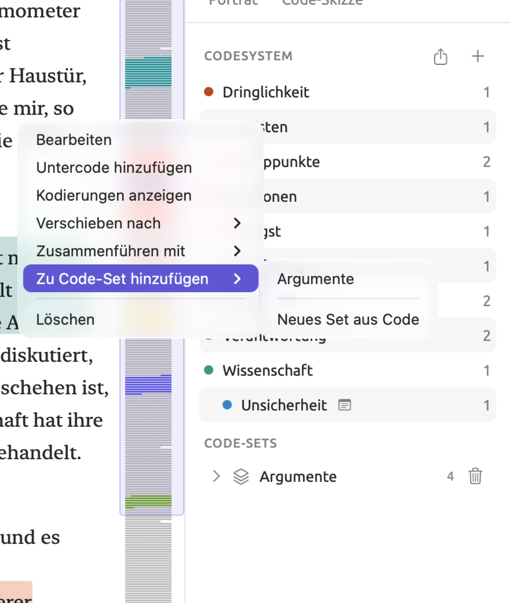
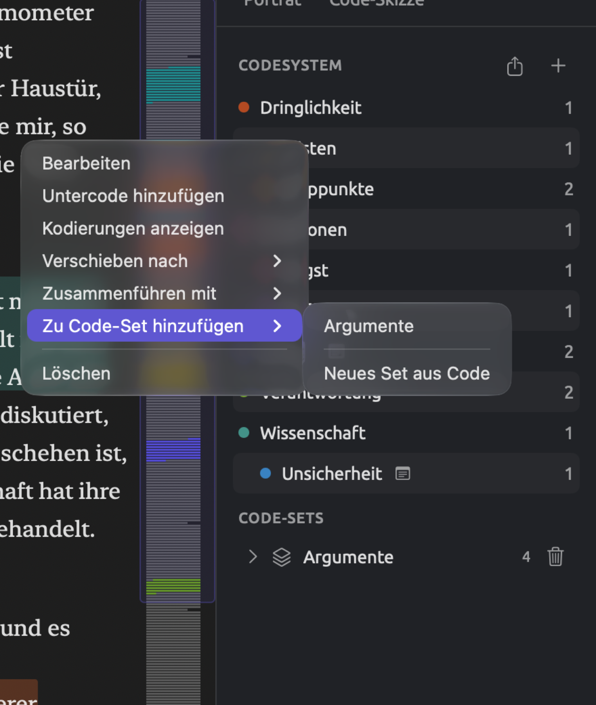
Enthält Ihr Projekt Code-Sets, erscheinen sie unter dem Codesystem in einem eigenen Abschnitt Code-Sets (siehe Code-Sets unten).
Tags an Codes
Tags sind kurze Bezeichnungen für Projekte, Dokumente, Codes, Memos und Verknüpfungen. Alle Tags bilden in LemmaLoom eine einzige Liste, sodass ein Tag wie „Wiedervorlage“ überall dasselbe bedeutet (siehe Tags in Kapitel 8, Sets, Gruppen, Tags und Attribute). Wie anderswo dienen Tags an Codes der Organisation und nicht der Deutung. Sie könnten mit Tags zum Beispiel die Codes kennzeichnen, die Sie noch genauer prüfen möchten.
Tags vergeben Sie im Dialog des Codes. Tippen Sie ein Tag in das Feld Tags (der Platzhalter lautet Tag hinzufügen) und drücken Sie den Zeilenschalter. Auch ein Komma schließt ein Tag ab. Während Sie tippen, schlägt LemmaLoom Tags vor, die irgendwo in LemmaLoom bereits vorkommen. Um ein Tag zu entfernen, klicken Sie auf die Schaltfläche daneben (×).
In der Ansicht Codebuch können Sie die Codes nach Tags filtern, sobald mindestens ein Code ein Tag hat. Unter der Liste erscheint dann die Schaltfläche Nach Tag filtern. Wählen Sie ein Tag, zeigt die Liste nur noch die Codes, die es tragen. Deren übergeordnete Codes bleiben sichtbar, damit der Baum seine Struktur behält. Das gewählte Tag steht über der Liste; ein Klick auf sein × zeigt wieder alle Codes.
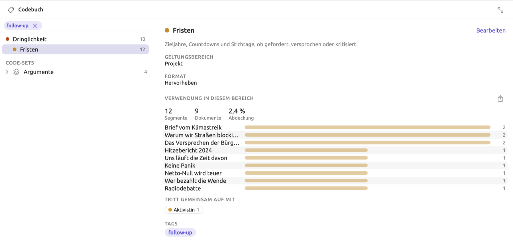
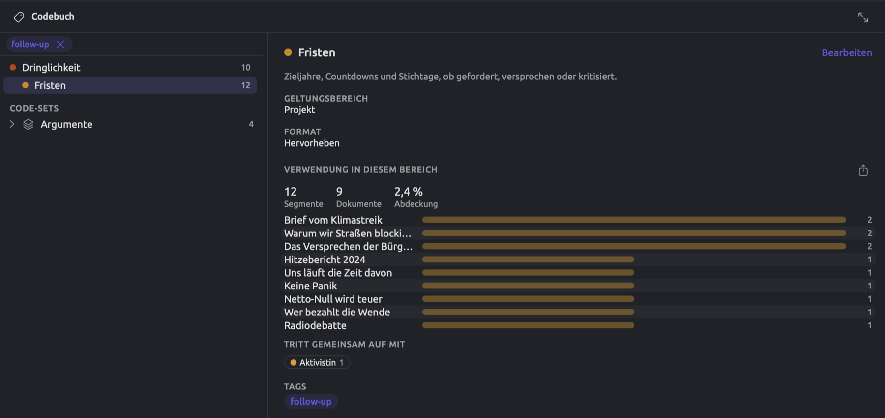
Memos, die einem Code zugeordnet sind, übernehmen automatisch seine Tags. In Abfragen findet eine Regel Tags Codes anhand der Tags, die ihnen zugeordnet sind (siehe Kapitel 15, Eine Abfrage erstellen).
Code-Sets
Mit einem Code-Set bündeln Sie mehrere Codes aus beliebigen Stellen Ihres Codebaums für Vergleiche oder Abfragen. Sie könnten zum Beispiel eines für die Codes einer bestimmten Forschungsfrage anlegen. Im Beispielprojekt „Klimadebatte“ enthält das Code-Set „Argumente“ die Codes „Kosten“, „Verantwortung“, „Wissenschaft“ und „Unsicherheit“ aus verschiedenen Teilen des Baums.
So legen Sie ein Code-Set an:
- Klicken Sie in der Facette Codes oder in der Ansicht Codebuch mit der rechten Maustaste auf einen Code.
- Wählen Sie Zu Code-Set hinzufügen ▸ Neues Set aus Code.
LemmaLoom legt dann ein Code-Set an, das diesen Code enthält, und wählt seinen vorgegebenen Namen Neues Code-Set aus, sodass Sie einen eigenen eintippen und den Zeilenschalter drücken können. Benennen Sie jedes Code-Set nach dem, was seine Codes gemeinsam haben, etwa nach der Forschungsfrage, zu der sie gehören. Um das Set später umzubenennen, klicken Sie im Abschnitt Code-Sets mit der rechten Maustaste darauf und wählen Umbenennen. Um einem Set einen weiteren Code hinzuzufügen, klicken Sie mit der rechten Maustaste auf den Code, wählen Zu Code-Set hinzufügen und dann im Menü das gewünschte Code-Set.
Der Abschnitt Code-Sets unter dem Codebaum, in der Facette Codes wie in der Ansicht Codebuch, enthält jedes vorhandene Set mit der Zahl seiner Codes. Ein Klick auf ein Set klappt es auf oder zu. Um herauszufinden, zu welchen Sets ein Code gehört, klicken Sie mit der rechten Maustaste auf den Code und öffnen Zu Code-Set hinzufügen; die Sets, zu denen er bereits gehört, sind deaktiviert. Um ein Code-Set zu löschen, klicken Sie mit der rechten Maustaste darauf und wählen Löschen, oder Sie klicken in der Facette Codes auf den Papierkorb daneben.
Um einen Code aus einem Set herauszunehmen, klappen Sie das Code-Set auf, klicken mit der rechten Maustaste auf den Code und wählen Aus Code-Set entfernen.
Im Skizzenraum können Code-Sets die Spalten für Vergleiche zwischen Codes liefern (siehe Codes gruppieren in Kapitel 14, Skizzenraum). Code-Sets können außerdem die Einträge einer Abfrage sein, aufgeführt als Code-Sets, und eine Regel auf das Code-Set eines Codes findet die Codes, die ein Set enthält (siehe Kapitel 15, Eine Abfrage erstellen).
Codes zusammenführen
Wenn Sie zwei Codes zusammenführen, geht der eine Code im anderen auf. Alle Kodierungen des ersten Codes gehen auf den zweiten über, und der erste Code wird gelöscht. Codes führen Sie zusammen, wenn Sie merken, dass zwei Codes dasselbe bedeuten, oder wenn ein Untercode wieder in seinem übergeordneten Code aufgehen soll. Um einen Code innerhalb der Hierarchie zu verschieben, ohne ihn aufgehen zu lassen, verwenden Sie Verschieben nach (siehe Untercodes und der Codebaum weiter oben in diesem Kapitel). Sie können fein gegliedert beginnen und später nach Bedarf zusammenführen.
- Klicken Sie in der Facette Codes oder in der Ansicht Codebuch mit der rechten Maustaste auf den Code, der aufgehen soll, oder wählen Sie ihn aus und öffnen Sie Projekt ▸ Zusammenführen mit.
- Wählen Sie Zusammenführen mit und dann den Code, der bleiben soll. Das Menü lässt den Code selbst und seine eigenen Untercodes aus. In der Facette Codes listet es nur die Codes auf, die Sie im geöffneten Dokument verwenden können, in der Ansicht Codebuch jeden Code des Projekts.
- Eine Meldung nennt beide Codes und gibt an, wie viele kodierte Segmente und Untercodes verschoben werden. Klicken Sie auf Zusammenführen.
Im Codebuch des Projekts „Klimadebatte“ hat „Fristen“ 12 Segmente und „Dringlichkeit“ 10. Führen Sie „Fristen“ mit „Dringlichkeit“ zusammen, erscheint die Meldung „Fristen“ mit „Dringlichkeit“ zusammenführen?; sie gibt an, dass 13 kodierte Segmente zu „Dringlichkeit“ wandern und „Fristen“ vollständig gelöscht wird. Nach Ihrer Bestätigung zeigt das Codebuch für „Dringlichkeit“ 10 + 12 = 22 Segmente.
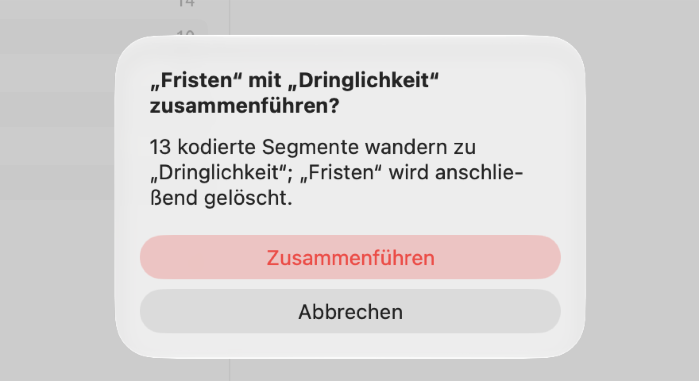
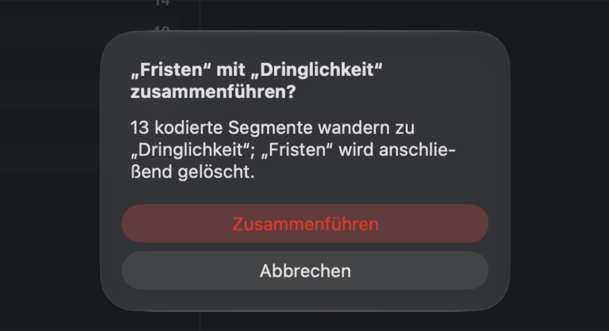
Alle Zahlen in dieser Meldung und in der Meldung zum Löschen eines Codes beziehen sich auf sämtliche Kodierungen im Projekt, einschließlich der Kopien in Übersetzungen wie „Uns läuft die Zeit davon (Englisch)“. Da die Ansicht Codebuch Kopien in Übersetzungen nicht berücksichtigt, ist die Zahl in der Meldung bei einem Code, der in „Uns läuft die Zeit davon“ vorkommt, höher als der Wert unter Segmente. „Fristen“ hat in „Uns läuft die Zeit davon“ nur eine Kodierung, sodass die Meldung mit deren Kopie 12 + 1 = 13 zählt.
Verschoben werden:
- Alle Kodierungen und kodierten Memos des zusammengeführten Codes.
- Seine Untercodes; sie werden zu Untercodes des verbleibenden Codes.
- Memos zum zusammengeführten Code selbst.
- Seine Zugehörigkeit zu Code-Sets; wo beide Codes gemeinsam in einem Set standen, steht der verbleibende Code nun nur noch einmal.
- Seine Attribute mit ihren Werten; hat der verbleibende Code ein Attribut mit demselben Namen und Typ, werden beide zu einem vereinigt.
Gesicherte Abfragen, die sich auf den zusammengeführten Code beziehen, beziehen sich von nun an automatisch auf den verbleibenden Code. Name, Farbe, Format, Geltungsbereich, Tags und Beschreibung des zusammengeführten Codes werden gelöscht, sodass nur der verbleibende Code übrig bleibt.
Waren vor dem Zusammenführen beide Codes genau demselben Text zugewiesen, ist diese Textstelle danach zweimal mit dem verbleibenden Code kodiert. Beide Kodierungen erscheinen einzeln in der Facette Kodierungen, und beide gehen in die Gesamtzahl der Kodierungen dieses Codes im Projekt ein. Stört das Ihre Zählungen, entfernen Sie eine der beiden (siehe Einen Code von einer Textstelle entfernen weiter oben in diesem Kapitel).
Einen Code löschen
- Klicken Sie mit der rechten Maustaste auf den Code und wählen Sie Löschen (in der Facette Codes) oder Code löschen (in der Ansicht Codebuch), oder wählen Sie ihn aus und dann Projekt ▸ Code löschen.
- Die Meldung gibt an, was mit ihm verschwindet, zum Beispiel Dies entfernt 2 Untercodes und 31 kodierte Segmente. Klicken Sie auf Löschen.
Beim Löschen eines Codes werden alle Codes darunter mitgelöscht, ebenso jede Kodierung des Codes und seiner Untercodes und die Attributwerte dieser Kodierungen. Das Löschen von „Dringlichkeit“ würde zum Beispiel insgesamt 31 Kodierungen entfernen, nämlich 11 von „Dringlichkeit“, 13 von „Fristen“ und 7 von „Kipppunkte“, wobei jede dieser Zahlen die Kopien in „Uns läuft die Zeit davon (Englisch)“ einschließt. Memos, die dem gelöschten Code zugeordnet sind, werden zu gewöhnlichen Memos.
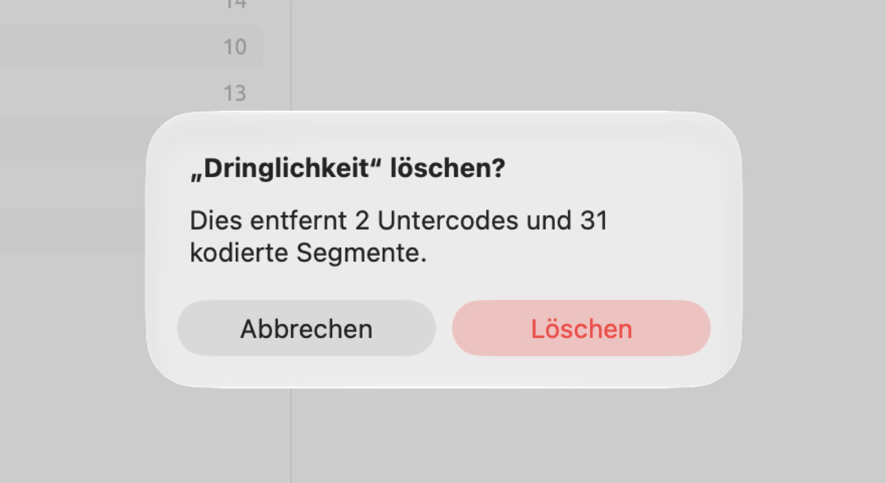
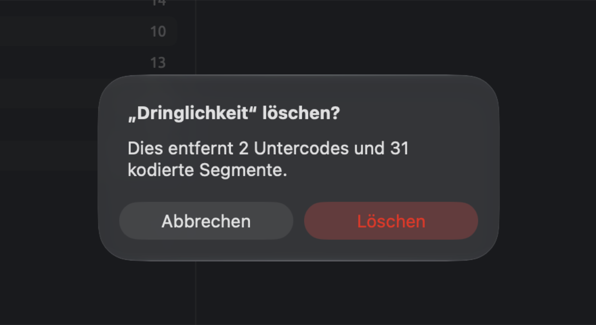
Bearbeiten ▸ Code löschen widerrufen (⌘Z) stellt alles wieder her, was mit dem Code verloren ging.
Die Ansicht Codebuch
Die Ansicht Codebuch zeigt das vollständige Codesystem des aktuellen Projekts mit Beschreibung, Kennzahlen und Tags jedes Codes. Sie öffnen sie in der Seitenleiste über Projekt oder mit einem Klick auf Codebuch im Tab eines Sets oder Tags. Der Tab eines Sets oder Tags zeigt beim Öffnen zuerst Codebuch.
In der Abbildung ist im Codebuch von „Klimadebatte“ der Code „Kosten“ ausgewählt. Er hat 19 Segmente in 10 Dokumenten, die meisten (fünf) in „Netto-Null wird teuer“. Der Code deckt 3,6 Prozent des gesamten Projekttextes ab. Seine Segmente überschneiden sich fünfmal mit dem Code „Verantwortung“.
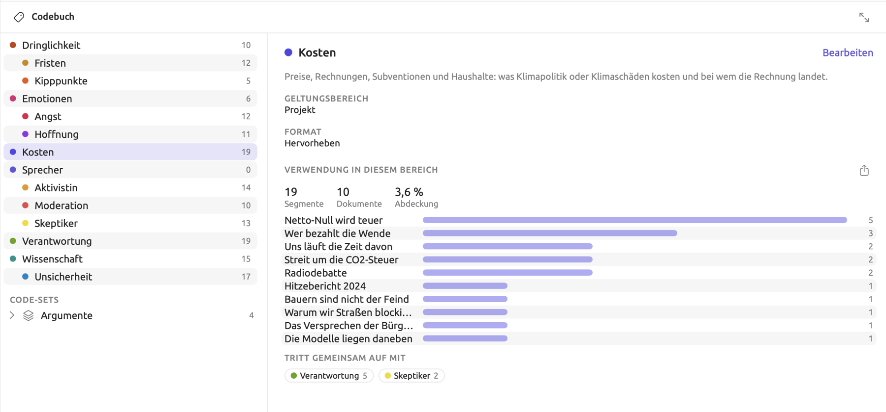
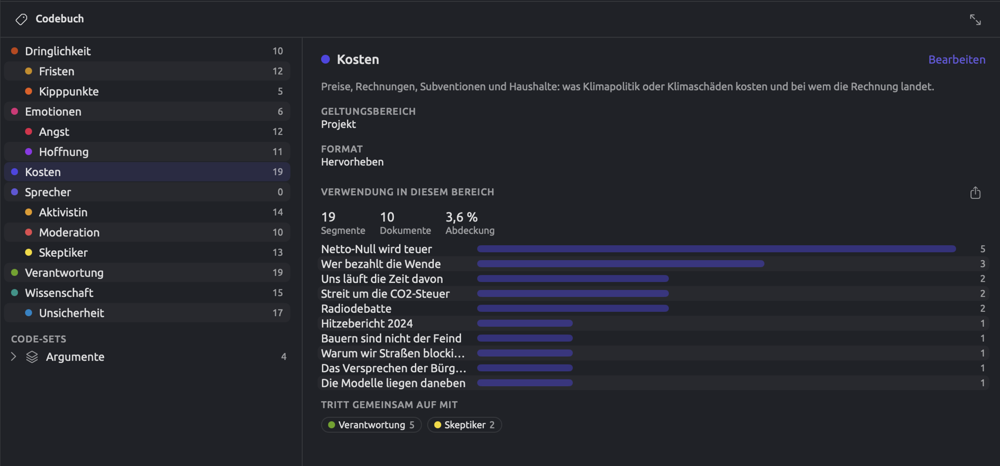
Links steht der Codebaum, darunter die Liste der Code-Sets des Projekts (siehe Code-Sets weiter oben in diesem Kapitel). Jeder Code im Baum trägt eine Zahl, die angibt, wie viele kodierte Segmente er im aktuellen Bereich hat. Unter dem Codebaum liegen Code hinzufügen, der Tag-Filter (siehe Tags an Codes weiter oben in diesem Kapitel) und Exportieren. Verschieben Sie die Trennlinie zwischen Baum und Detailbereich, um einer der beiden Seiten mehr Platz zu geben.
Wählen Sie einen Code aus, um rechts seine Details zu sehen:
- Farbe, Name und die Schaltfläche Bearbeiten;
- die Beschreibung, die unter Beschreibung steht;
- die Einstellungen Geltungsbereich und Format;
- VERWENDUNG IN DIESEM BEREICH mit drei Zahlen (Segmente, Dokumente und Abdeckung in Prozent) und Balken für alle Dokumente, die diesen Code enthalten, das Dokument mit den meisten Segmenten zuerst;
- TRITT GEMEINSAM AUF MIT, eine Liste aller anderen Codes, deren Segmente sich mit Segmenten dieses Codes überschneiden, jeweils mit der Zahl der Überschneidungen;
- TAGS, alle Tags des Codes.
Ein Klick auf einen Balken unter VERWENDUNG IN DIESEM BEREICH öffnet das zugehörige Dokument in der Leseansicht beim ersten Segment dieses Codes. Rechts neben der Überschrift VERWENDUNG IN DIESEM BEREICH liegt eine Export-Schaltfläche, mit der Sie die Balken als Bild (PNG oder PDF) oder die Zahlen als CSV-Datei sichern.
Ein Doppelklick auf Segmente oder ein Rechtsklick darauf mit der Wahl von Kodierungen anzeigen öffnet die Segmente dieses Codes in der Ansicht Kodierungen. Ein Code unter TRITT GEMEINSAM AUF MIT verhält sich ebenso und listet die Segmente dieses Codes auf, die sich mit ihm überschneiden. Bei Bedarf nehmen Sie die Segmente der Untercodes mit der Option Untercodes einbeziehen neben dem Filter der Ansicht Kodierungen hinzu (siehe Die Ansicht Kodierungen in Kapitel 13, Codes auswerten).
Die Zahlen berücksichtigen nur Kodierungen in Originaldokumenten (eine Kodierung in „Uns läuft die Zeit davon“ und ihre Kopie in „Uns läuft die Zeit davon (Englisch)“ zählen also nur einmal). Die Zahlen eines übergeordneten Codes zählen nur seine eigenen Kodierungen, und kodierte Memos bleiben außen vor.
Die Zahlen lesen
Segmente ist die Zahl der Kodierungen des Codes in den Dokumenten des Bereichs. Dokumente ist die Zahl der Dokumente, die mindestens ein Segment des Codes enthalten.
Abdeckung ist der Anteil aller Zeichen in den Dokumenten des Bereichs, den die Segmente des Codes abdecken. Dieser Wert zeigt, ob ein Code nur hier und da ein paar Zeilen abdeckt oder große Teile der Dokumente.
ist die Gesamtzahl der Zeichen in den Segmenten des Codes. Wo sich Segmente desselben Codes im selben Dokument überschneiden, zählen die gemeinsamen Zeichen nur einmal. ist die Gesamtzahl der Zeichen in allen Dokumenten des Bereichs, ob kodiert oder nicht. Leerzeichen und Zeilenumbrüche zählen mit.
Im Codebuch des Sets „Skeptiker“ hat der Code „Kosten“ 9 Segmente in 3 von 5 Dokumenten. Nehmen Sie an, die Dokumente dieses Bereichs umfassen zusammen 21.000 Zeichen, und die 9 Segmente belegen insgesamt 1.260 davon. Diese Zahlen kommen den tatsächlichen Werten recht nahe. Die Ansicht zeigt Segmente 9, Dokumente 3 und:
Die Dokumente „Keine Panik“ und „Wissenschaft ist nie abgeschlossen“ haben keine Segmente von „Kosten“, tragen aber zu bei. Im Codebuch des Projekts umfasst alle Texte der Aktivisten, „Hitzebericht 2024“ und alle übrigen Dokumente, und umfasst die Segmente von „Kosten“ aus all diesen Dokumenten. Nehmen Sie an, das Projekt enthält 59.000 Zeichen, und die Segmente von „Kosten“ belegen 2.124 davon, also die oben genannten 1.260 und weitere 864 Zeichen aus anderen Teilen des Projekts. Das Codebuch des Projekts ergibt dann , also 3,6 %, obwohl sich keine Kodierung geändert hat. Verwenden Sie diesen Wert zusammen mit Segmente, um die Abdeckung mehrerer Codes innerhalb ein und desselben Bereichs zu vergleichen, in dem für alle betrachteten Codes gleich ist.
Die Facette Code-Statistik bietet dasselbe Maß für einzelne Dokumente, wie unter Code-Häufigkeiten und Abdeckung in Kapitel 13, Codes auswerten beschrieben.
TRITT GEMEINSAM AUF MIT zählt überlappende Paare von Segmenten. Jedes Mal, wenn ein Segment von „Kosten“ ein Segment eines anderen Codes überlappt, erhöht sich die Zahl dieses anderen Codes unter TRITT GEMEINSAM AUF MIT um 1; überlappt dieselbe Textstelle von „Kosten“ zwei verschiedene Segmente von „Verantwortung“, erhöht sich die Zahl bei „Verantwortung“ um 2. Eine hohe Zahl kann schlicht bedeuten, dass beide Codes häufig vergeben wurden, denn ein Code mit vielen langen Segmenten überschneidet sich schon zufällig mit anderen Codes. Im Projekt „Klimadebatte“ wurden „Kosten“ und „Verantwortung“ häufiger verwendet als alle anderen Codes, mit je 19 Segmenten, und bei „Kosten“ steht „Verantwortung“ mit 5. Wie stark zwei Codes dazu neigen, im selben Dokument gemeinsam aufzutreten, misst der Abschnitt Kookkurrenzen der Facette Code-Statistik, beschrieben unter Kookkurrenzen in einem Dokument in Kapitel 13, Codes auswerten.
Das Codebuch exportieren
Exportieren unter dem Baum exportiert die im Baum angezeigten Codes als CSV-Datei mit sechs Feldern (Code, Pfad, Ebene, Anzahl, Beschreibung und Farbe). Das Feld Pfad gibt an, wo der Code in der Hierarchie des Baums im Verhältnis zu anderen Codes liegt. Für den Code „Fristen“ unter dem Code „Dringlichkeit“ lautet der Pfad also Dringlichkeit / Fristen. Ebene gibt an, auf welcher Ebene der Hierarchie der Code liegt (Ebene 1 für Codes der obersten Ebene, Ebene 2 für Untercodes und so weiter). Anzahl gibt die Gesamtzahl der kodierten Segmente im Bereich an. Ist ein Tag-Filter gesetzt, werden nur die Codes exportiert, die die Ansicht anzeigt. Wie Sie das Codebuch stattdessen im REFI-QDA-Format exportieren, lesen Sie unter Ein Codebuch exportieren in Kapitel 22, Austausch und Export.
Das Codebuch-Fenster
Um Ihr Codebuch neben der Leseansicht offen zu halten, öffnen Sie zuerst die Ansicht Codebuch über Projekt in der Seitenleiste und klicken dann am rechten Ende der Leiste über der Ansicht auf In einem Fenster öffnen (die zwei diagonalen Pfeile). Sie können das Codebuch-Fenster auch mit Fenster ▸ Codebuch öffnen, oder Sie klicken in der Seitenleiste mit der rechten Maustaste auf Ihr Projekt und wählen Codebuch. Das Codebuch-Fenster umfasst Ihr gesamtes Projekt. Am oberen Rand hat es für jede Ansicht des Projektregals eine Schaltfläche. Die Ansichten Kodierungen, Memos und Verknüpfungen Ihres Projekts haben dieselbe Schaltfläche In einem Fenster öffnen, die das Fenster mit der jeweiligen Ansicht öffnet.

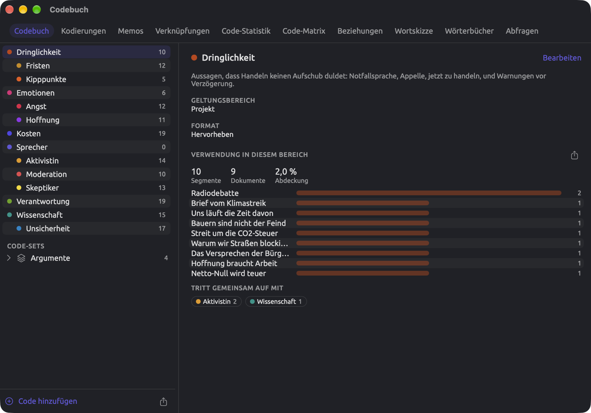
Memos
Ein Memo enthält Ihre Gedanken dazu, was eine bestimmte Textstelle bedeutet. Das können Vergleiche zwischen Textstellen sein, Ihre Überlegungen und Fragen, die beim Kodieren aufkommen. Meist schreiben Sie Memos, während Sie Ihre Dokumente kodieren, und kehren später zu ihnen zurück, wenn Sie Schlüsse ziehen. Im Beispielprojekt „Klimadebatte“ gibt es Memos zu mehreren Textstellen in vier Dokumenten. Im Dokument „Uns läuft die Zeit davon“ hält zum Beispiel das Memo zur Textstelle „Sie ist ein Wunschzettel mit Datum“ fest, dass ferne Zielmarken als Ausweichen gelesen werden und nicht als Ehrgeiz.
Ein Memo schreiben
- Wählen Sie die Textstelle aus, um die es im Memo geht.
- Klicken Sie in der Auswahlleiste auf Memo, oder drücken Sie ⇧⌘M.
- Der Dialog Neues Memo zeigt oben den ausgewählten Text. Schreiben Sie Ihre Notiz unter Memo.
- Um das Memo mit Tags zu versehen, geben Sie sie unter Tags ein. Um es zu einem kodierten Memo zu machen, wählen Sie unter Code einen Code (siehe Kodierte Memos unten).
- Klicken Sie auf Sichern.
Sichern bleibt deaktiviert, bis Ihr Memo Text enthält (der Tooltip lautet Memo ist leer).
Kodierte Memos
Ist im Menü Code eines Memos ein Code gewählt, wird das Memo zu einem kodierten Memo. Kodierte Memos verwenden Sie, wenn sich Ihre Notiz auf den gewählten Code bezieht und nicht auf die Textstelle selbst, etwa darauf, warum eine Textstelle zu dem Code passt, den Sie vergeben. In „Uns läuft die Zeit davon“ ist der Beispielsatz, in dem man im dichten Nebel auf eine Klippe zugeht, mit „Angst“ kodiert. Wählen Sie in Ihrem Memo zu dieser Textstelle wie in der Abbildung „Angst“ als Code, zählt „Angst“ in den Facetten Codes und Code-Statistik doppelt, einmal für die Kodierung und einmal für das Memo. Möchten Sie etwas zu Ihrer Kodierung festhalten, ohne die Zahlen Ihrer Kodierstatistik zu erhöhen, wählen Sie im Menü Code den Eintrag Keine.
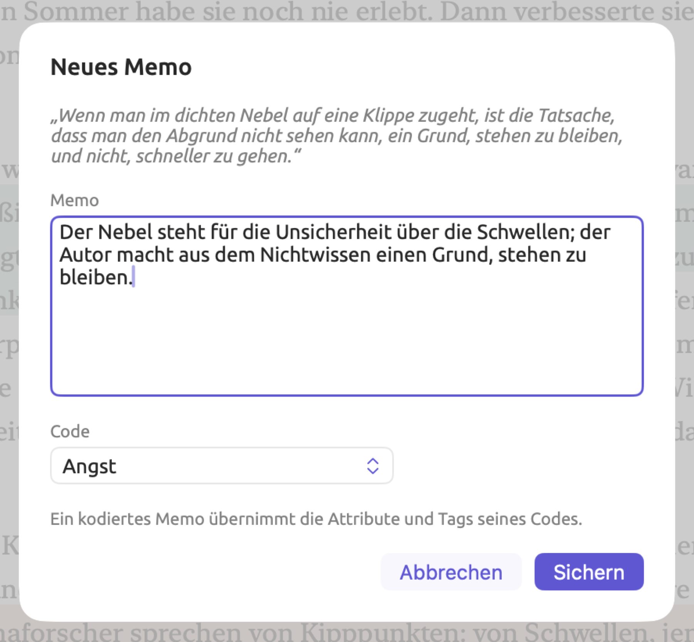
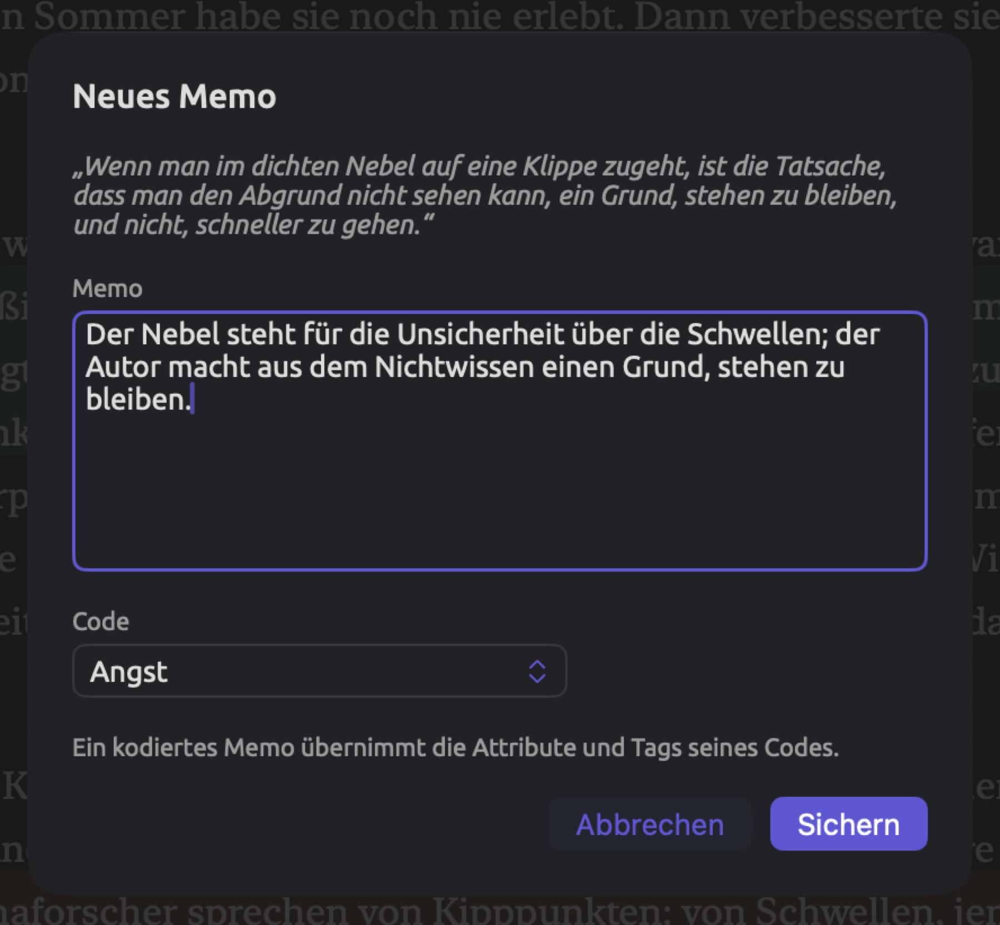
Ein kodiertes Memo wird in Farbe und Format des Codes dargestellt, und seine Annotation in der Randspalte nimmt die Farbe des Codes an.
Außerdem zählt ein kodiertes Memo als Kodierung seines Codes, in den Facetten Codes und Code-Statistik wie in Abfrageergebnissen, es sei denn, Sie entfernen das Häkchen bei Kodierte Memos zählen als Kodierungen (siehe Optionen in Kapitel 15, Eine Abfrage erstellen). Die Ansichten Codebuch und Kodierungen zählen nur Kodierungen.
Kodierte Memos übernehmen die Tags ihres Codes. Sobald Sie für ein Memo einen Code wählen, wird aus dem Eingabefeld Tags das Feld Geerbte Tags, das diese Tags anzeigt; was Sie zuvor in das Feld eingegeben hatten, wird dabei gelöscht. Hat der Code keine Tags, zeigt der Dialog den Hinweis Ein kodiertes Memo übernimmt die Attribute und Tags seines Codes.
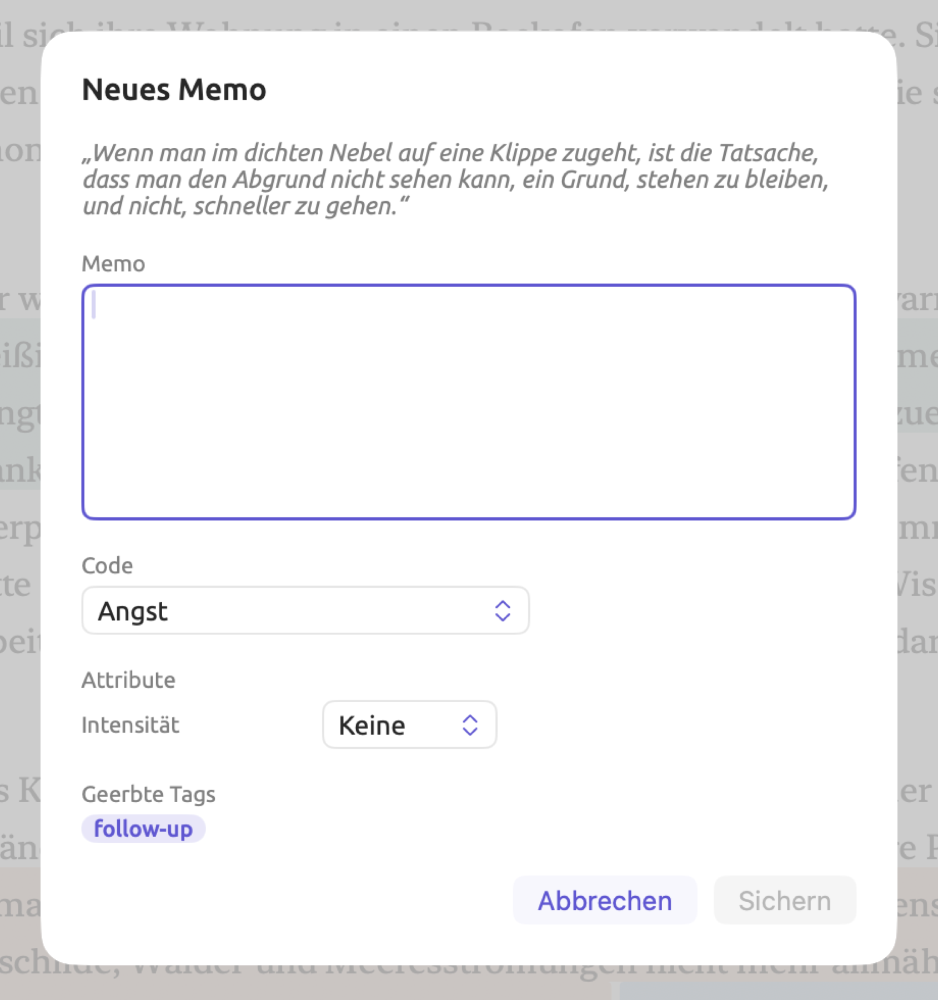
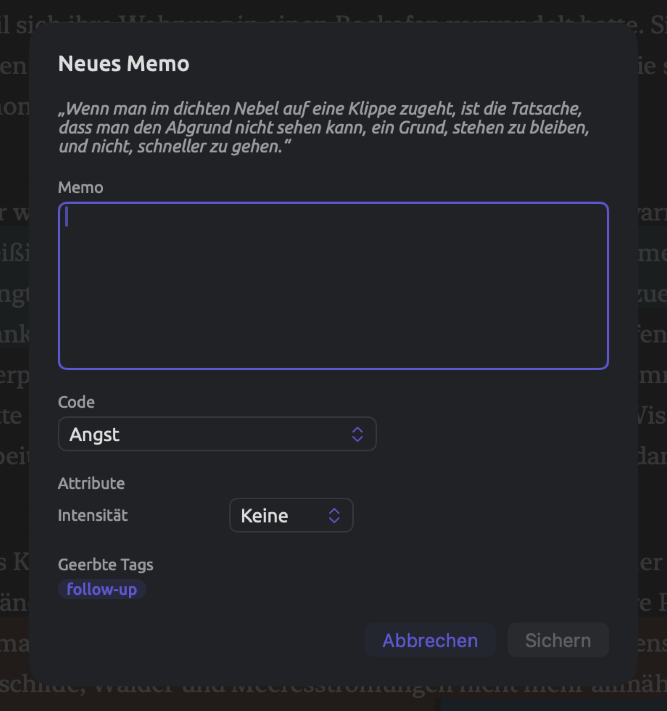
Hat der Code Attribute, erscheint ein Feld Attribute mit einem Bedienelement für jedes.
Das Aufklappmenü Code zeigt die Codes, die Sie in diesem Dokument verwenden können. Mit Keine wird ein kodiertes Memo wieder zu einem gewöhnlichen Memo.
Memos in der Leseansicht
Die Textstelle eines Memos erscheint gelb, die Textstelle eines kodierten Memos in Farbe und Format seines Codes. Die Annotation am Anfang der Textstelle in der Randspalte zeigt die ersten Wörter des Memos; halten Sie den Mauszeiger darauf, sehen Sie den ganzen Inhalt. Ein Klick auf die Annotation wählt die Textstelle aus.
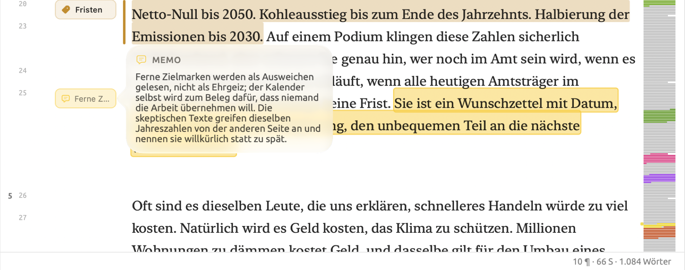
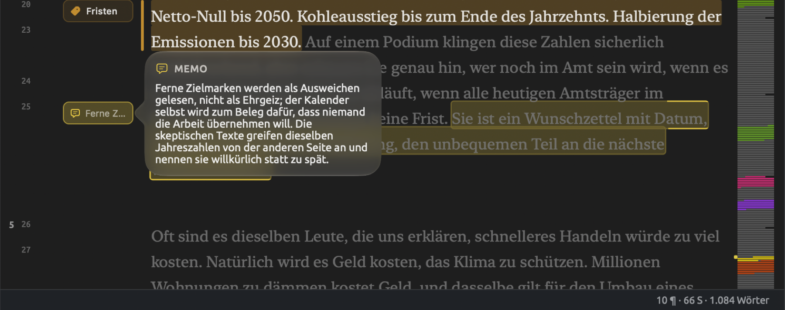
Memos werden immer angezeigt, unabhängig davon, welche Lenses aktiv sind, und kodierte Memos bleiben auch sichtbar, wenn die Lens Codes ausgeschaltet ist.
Memos lesen, bearbeiten und löschen
Die Memos des aktiven Dokuments stehen in der Facette Kodierungen des Inspektors. Stellen Sie den Umschalter oben auf Memos.
Jedes Memo ist eine Zeile mit dem Memosymbol (einer Sprechblase), bei einem kodierten Memo dem Namen seines Codes, der Position seiner Textstelle, seiner ersten Textzeile und seinen Tags. Kodierte Memos haben gefüllte Symbole in der Farbe ihres Codes. Ein Klick auf eine Zeile scrollt die Leseansicht zur Textstelle und klappt die Zeile auf; sie zeigt dann bis zu sechs Zeilen Text, die Werte der Attribute und die Schaltflächen Bearbeiten und Löschen. Ein Rechtsklick auf eine Zeile öffnet ein Kontextmenü mit Bearbeiten, Zur Quelle springen und Löschen.
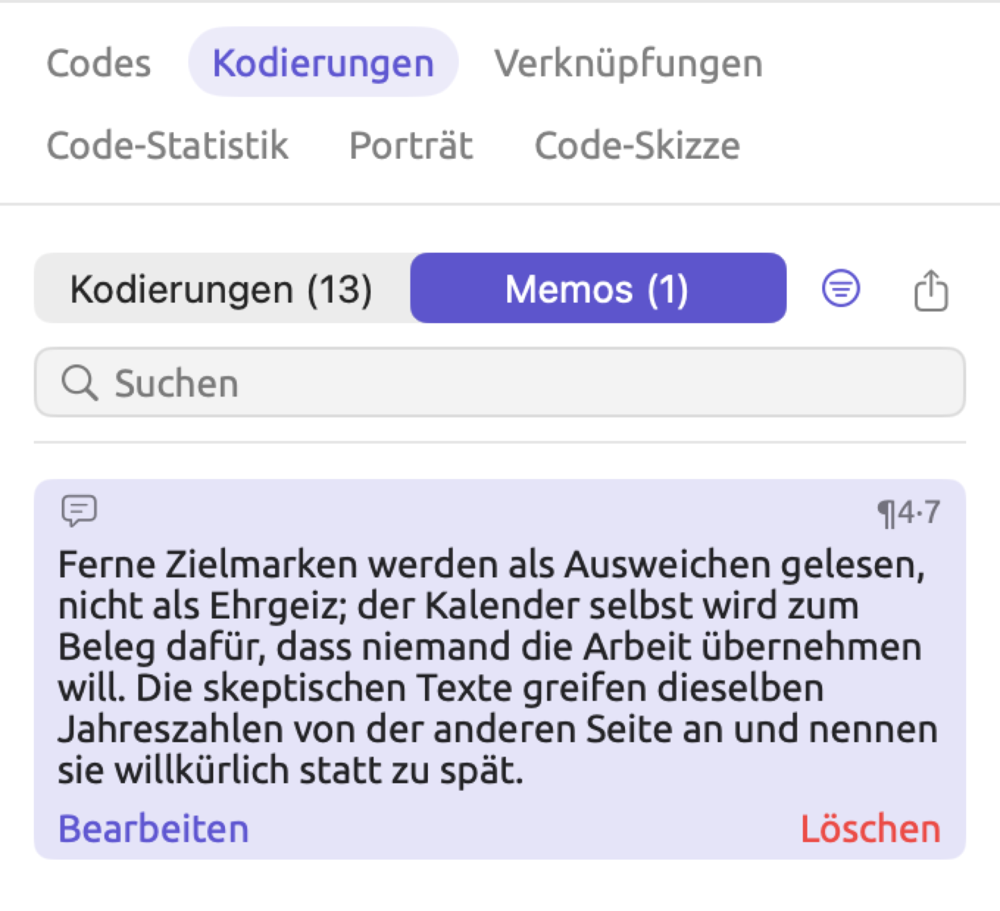
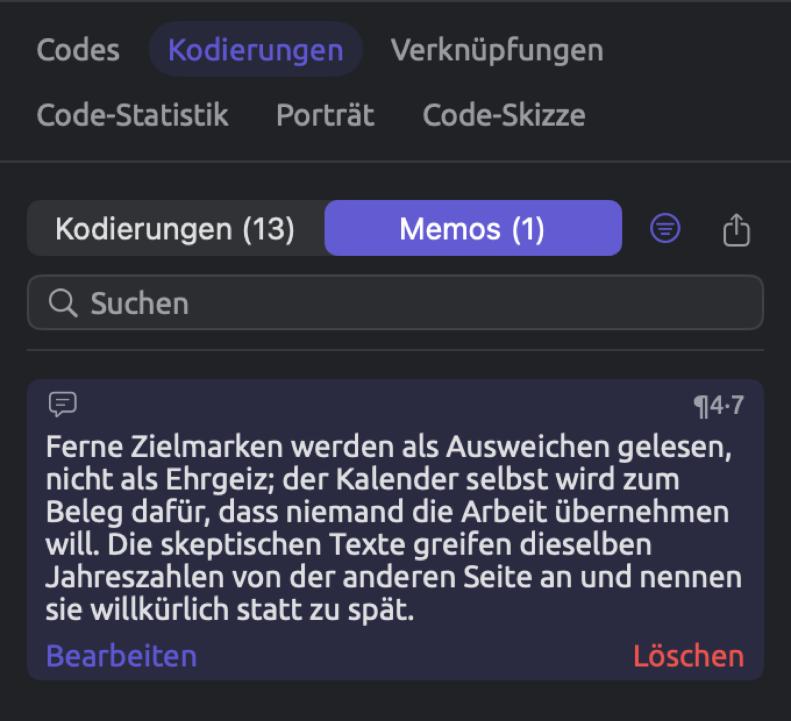
Suchen durchsucht den Text der Memos und die ihnen zugeordneten Tags. Mit der Filter-Schaltfläche (Nach Code filtern) filtern Sie Memos nach Code. Exportieren exportiert die angezeigten Zeilen als CSV-Datei mit den Spalten Code, Stelle, Text (die Textstelle selbst), Memo und Tags.
Bearbeiten öffnet den Dialog Memo bearbeiten, der dieselben Felder wie Neues Memo hat und unten links zusätzlich eine Schaltfläche Löschen.
Die Ansicht Memos
Die Ansicht Memos des Projektregals zeigt Ihre Memos in einer Tabelle. Sie können die Memos des ganzen Projekts oder die der Dokumente eines bestimmten Sets anzeigen. Die Tabelle hat die drei Spalten Dokument, Code und Memo. Oben links steht die Zahl der angezeigten Zeilen, beim Set „Aktivisten“ etwa 2 Memos.
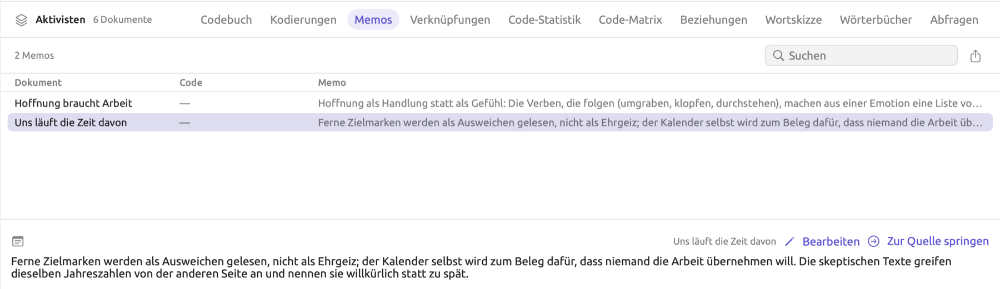
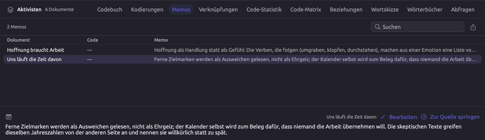
- Suchen findet Memos anhand ihres Textes, des Dokumenttitels, des Codenamens oder eines Tags.
- Wählen Sie eine Zeile aus, öffnet sich unter der Tabelle ein Bereich mit dem vollständigen Memo, seinen Tags und seinen Attributwerten; mit den Schaltflächen Bearbeiten und Zur Quelle springen bearbeiten Sie das Memo oder springen zu dem Dokument, in dem es angelegt wurde. Ziehen Sie die Trennlinie zwischen Tabelle und Bereich, um einem der beiden mehr Platz zu geben.
- Ein Doppelklick auf eine Zeile oder Zur Quelle springen öffnet das Dokument an der Stelle des ausgewählten Memos.
- Ein Rechtsklick bietet Bearbeiten, Zur Quelle springen und Löschen an.
- Exportieren exportiert die angezeigten Zeilen als CSV-Datei.
Memos zu Dokumenten, Codes und dem Projekt
In LemmaLoom hängen Sie Memos direkt an Textstellen. Importieren Sie jedoch Projekte aus Anwendungen, die den REFI-QDA-Standard unterstützen, können auch Memos zu ganzen Dokumenten, zu Codes und zum Projekt selbst übernommen werden (siehe Ein REFI-QDA-Projekt importieren in Kapitel 22, Austausch und Export).
Memos zu Dokumenten stehen in der Facette Kodierungen des Dokuments unter Memos. Außerdem erscheinen sie in der Ansicht Memos des Projekts und in der Ansicht Memos jedes Sets, das das Dokument enthält.
Memos zu Codes und zum Projekt erscheinen nur in der Ansicht Memos des Projekts. Ihre Spalte Dokument zeigt Ohne Titel. Alle Notizen zu einem Code werden in der Ansicht Memos zu einem Memo zusammengefasst. Auch das Projekt selbst hat ein Memo, das seinen Inhalt beschreibt.
Notizen zu Verknüpfungen im importierten Projekt werden zu Kommentaren dieser Verknüpfungen.
Verknüpfungen
Verknüpfungen halten Beziehungen zwischen zwei Textstellen fest. Solche Beziehungen können Antworten, Erklärungen, Widersprüche, Wiederholungen oder alles sein, was Sie selbst festlegen. Verknüpfungen helfen, wo Texte aufeinander reagieren oder wo es darauf ankommt, ein Argument nah bei seinem Beleg zu halten. „Klimadebatte“ enthält fünf Verknüpfungen. „Keine Panik“ hat eine Verknüpfung „widerspricht“ zu „Uns läuft die Zeit davon“, weil beide Dokumente darin übereinstimmen, dass niemand weiß, wo die Schwellen des Klimasystems liegen, daraus aber unterschiedliche Schlüsse ziehen. Außerdem enthält das Projekt eine Verknüpfung „stützt“ von „Radiodebatte“ zu „Hitzebericht 2024“, weil die Moderation eine Zahl aus diesem Bericht zitiert.
Zwei Textstellen verknüpfen
Die Abbildung zeigt, wie zwischen zwei Auszügen eine weitere Verknüpfung entsteht. In „Klimadebatte“ misstrauen „Uns läuft die Zeit davon“ und „Netto-Null wird teuer“ beide Zieljahren, doch ihre Autoren argumentieren ganz unterschiedlich. In „Uns läuft die Zeit davon“ heißt eine Frist, die über die nahe Zukunft hinausreicht, „ein Wunschzettel mit Datum“. In „Netto-Null wird teuer“ dagegen wird ein als Ziel gesetztes Jahr „eine politische Entscheidung und keine technische“ genannt. Die Verknüpfung führt mit der Relation „steht im Gegensatz zu“ vom ersten Auszug zum zweiten und bringt Sie von einem Auszug zum anderen.
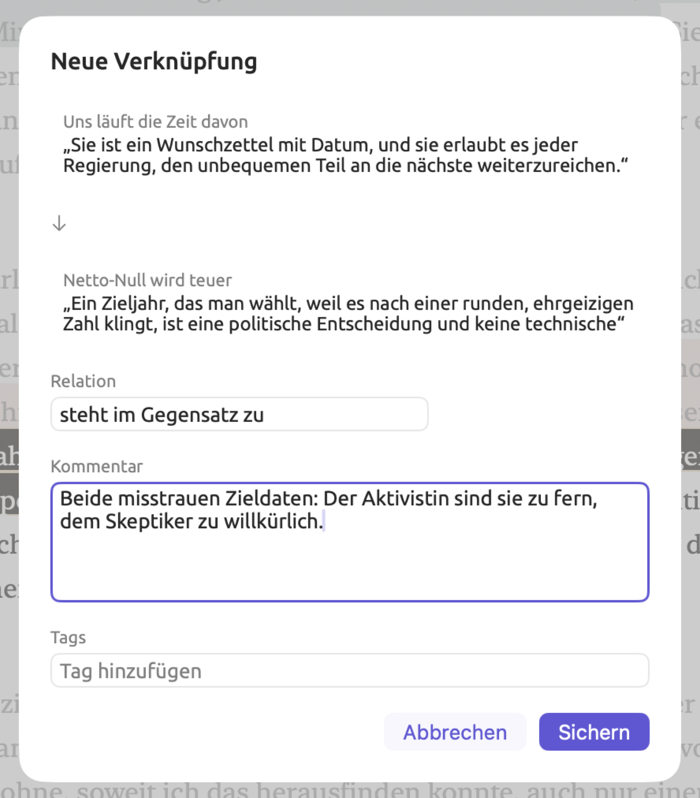
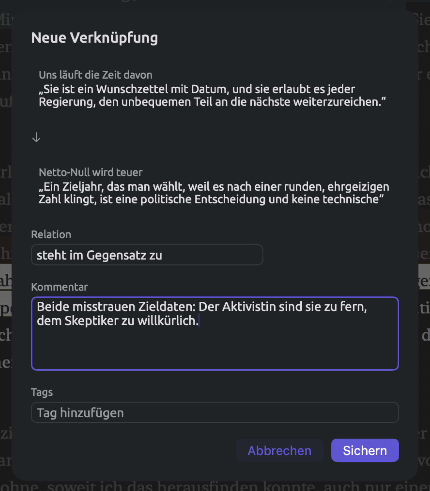
So verknüpfen Sie zwei Textstellen:
- Wählen Sie die erste Textstelle aus.
- Klicken Sie in der Auswahlleiste auf Verknüpfung, oder drücken Sie ⇧⌘L. LemmaLoom merkt sich die Textstelle als Anfang einer Verknüpfung.
- Wählen Sie die zweite Textstelle aus, im selben oder in einem anderen Dokument. Der Anfang der Verknüpfung bleibt erhalten, während Sie zwischen Dokumenten wechseln.
- Klicken Sie in der Auswahlleiste auf Verknüpfung abschließen, oder drücken Sie erneut ⇧⌘L.
- Der Dialog Neue Verknüpfung zeigt das Dokument und die Textstelle, bei denen Sie begonnen haben, und unter einem Pfeil die Textstelle, bei der Sie die Verknüpfung abgeschlossen haben. Geben Sie unter Relation die Relation ein.
- Füllen Sie Kommentar und Tags aus oder lassen Sie beides leer, und klicken Sie auf Sichern.
Verknüpfungen sind gerichtet; eine Verknüpfung führt also von der Textstelle, bei der Sie begonnen haben, zu der, bei der Sie sie abgeschlossen haben, und ihre Relation liest sich in dieser Richtung. Geben Sie beim Anlegen nichts anderes an, hat eine Verknüpfung die Relation bezieht sich auf. Wählen Sie Relationen, die Sie voraussichtlich oft wiederverwenden (etwa „widerspricht“, „erklärt“, „Beispiel für“); dann lassen sich Verknüpfungen später leicht anhand dieser Relationen finden.
Anfang und Ende einer Verknüpfung müssen im selben Projekt liegen; beide Textstellen dürfen auch im selben Dokument liegen.
Klicken Sie im Dialog Neue Verknüpfung auf Abbrechen, bleibt der Anfang der Verknüpfung erhalten, sodass Sie von dort eine Verknüpfung zu einer anderen Stelle im Projekt anlegen können.
Um eine begonnene Verknüpfung vorzeitig abzubrechen, wählen Sie Dokument ▸ Verknüpfung abbrechen (⌥⇧⌘L), oder Sie wählen irgendwo eine Textstelle aus und klicken auf Ausstehende Verknüpfung abbrechen (ein durchgestrichenes Verknüpfungssymbol) direkt neben der Schaltfläche Verknüpfung abschließen.
Einer Verknüpfung folgen
An beiden Enden jeder Verknüpfung steht eine Annotation in der Randspalte. Die Annotationen erscheinen in der Akzentfarbe und zeigen die Relation zwischen den beiden Textstellen. Halten Sie den Mauszeiger auf die Annotation, sehen Sie die Angaben zur Verknüpfung, darunter die Relation, das andere Dokument (oder in diesem Dokument), die Textstelle am anderen Ende und den Kommentar zur Verknüpfung. Mit einem Klick auf die Annotation oder auf Zum anderen Ende springen in ihrem Popover gelangen Sie zum anderen Ende der Verknüpfung. Liegt es in einem anderen Dokument, öffnet sich dieses Dokument in einem eigenen Tab.


Die Facette Verknüpfungen gehört zum Tab Kodierung des Inspektors. Sie enthält alle Verknüpfungen mit einem Ende im aktiven Dokument, unter einer Überschrift wie Verknüpfungen (3). Exportieren rechts neben der Überschrift exportiert die vollständige Liste der Verknüpfungen als CSV-Datei. Die Liste besteht aus Einträgen mit dem Anfang, dem Pfeil für die Verknüpfung samt ihrer Relation und dem Ende, darunter Kommentar und Tags. Ein Ende im aktuellen Dokument zeigt seine Position im Text, ein Ende in einem anderen Dokument den Titel dieses Dokuments. Zu jedem Ende gelangen Sie mit der Pfeil-Schaltfläche daneben (Zu diesem Ende springen oder Im anderen Dokument öffnen); ein Klick auf ein Ende im aktuellen Dokument führt dorthin, ein Doppelklick auf ein Ende in einem anderen Dokument öffnet es.
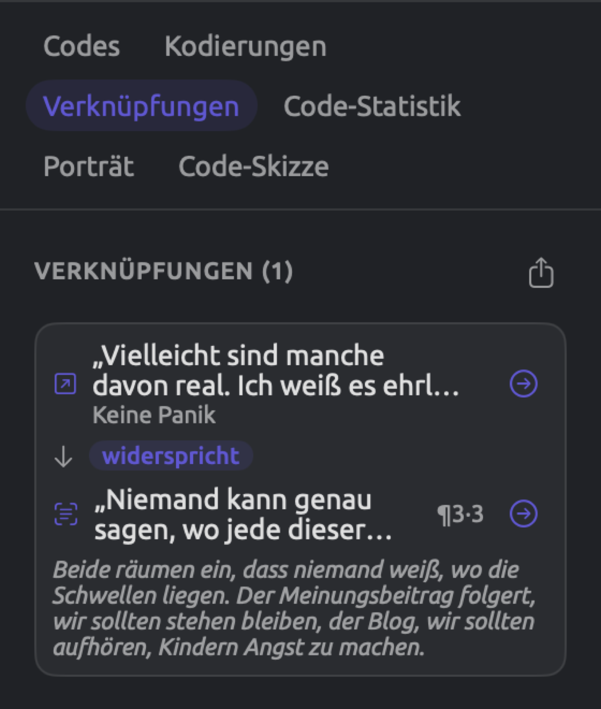
Verknüpfungen bearbeiten und löschen
Klicken Sie in der Facette Verknüpfungen mit der rechten Maustaste auf die Verknüpfung und wählen Sie Bearbeiten oder Löschen. In der Ansicht Verknüpfungen des Projektregals klicken Sie ebenso mit der rechten Maustaste auf die Verknüpfung und wählen Bearbeiten oder Verknüpfung löschen.
Im Dialog Verknüpfung bearbeiten ändern Sie Relation, Kommentar und Tags der Verknüpfung. Um die Verknüpfung an eine andere Textstelle zu hängen, löschen Sie sie und legen eine neue an.
Die Ansicht Verknüpfungen
In der Ansicht Verknüpfungen des Projektregals sehen Sie entweder alle Verknüpfungen eines Projekts oder die Verknüpfungen, von denen mindestens ein Ende in den Dokumenten eines Sets liegt. Die Zahl der angezeigten Verknüpfungen steht oben links. Mit Suchen (rechts in der Leiste oben) filtern Sie nach den Textstellen, der Relation, dem Kommentar, den Tags oder den Titeln der beteiligten Dokumente. Die Abbildung zeigt die fünf Verknüpfungen des Projekts „Klimadebatte“ mit den Relationen „stützt“, „widerspricht“ und „antwortet auf“.
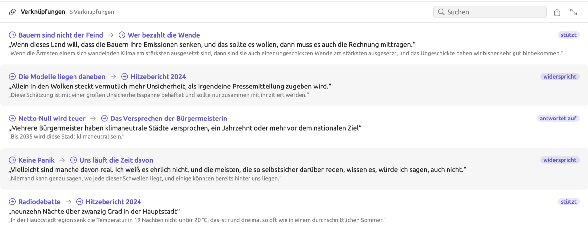
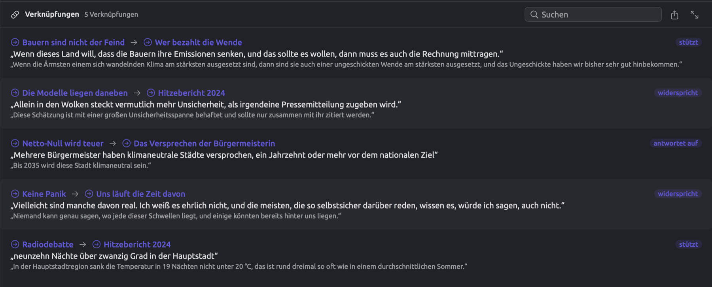
Jede Verknüpfung ist eine Zeile mit Anfangs- und Enddokument und einem Pfeil dazwischen. Danach folgen die Relation und die beiden Textstellen (die des Endes blasser). Die Tags der Verknüpfung stehen zuletzt, unter den Textstellen. Ein Klick auf einen Dokumenttitel führt direkt zu diesem Ende. Ein Doppelklick auf eine Zeile führt zum Anfang der Verknüpfung, ebenso der Zeilenschalter bei ausgewählter Zeile. Ein Rechtsklick auf eine Zeile bietet Bearbeiten, Quelle öffnen (Anfang), Ziel öffnen (Ende) und Verknüpfung löschen an.
Wurde eine Verknüpfung in eine Übersetzung kopiert, erscheint sie in der Liste nur einmal. Mit Exportieren sichern Sie die Liste als CSV-Datei mit den Spalten Ausgangsdokument, Ausgangstext, Relation, Zieldokument, Zieltext, Kommentar und Tags. Gibt es keine Verknüpfungen zu exportieren, ist Exportieren deaktiviert und zeigt beim Darüberfahren Nichts zu exportieren.
Lesezeichen
Ein Lesezeichen markiert eine Textstelle, die Sie später wieder brauchen könnten, etwa ein Zitat für einen Aufsatz oder die Stelle, an der Sie mit dem Kodieren aufgehört haben. Im Projekt „Klimadebatte“ haben vier Dokumente Lesezeichen, jedes mit einem Kommentar. „Keine Panik“ hat zum Beispiel ein Lesezeichen auf „Manches steht wenigstens fest.“; der Kommentar lautet „Ironischer Schlusssatz“.
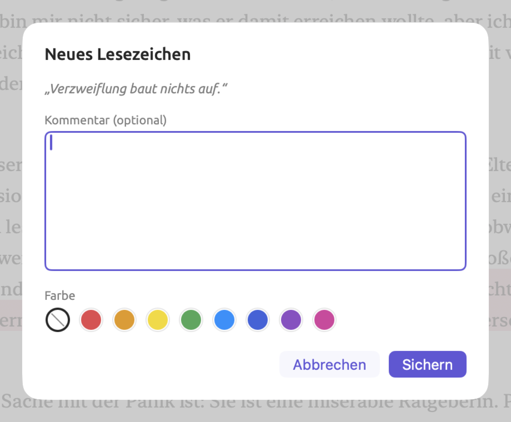
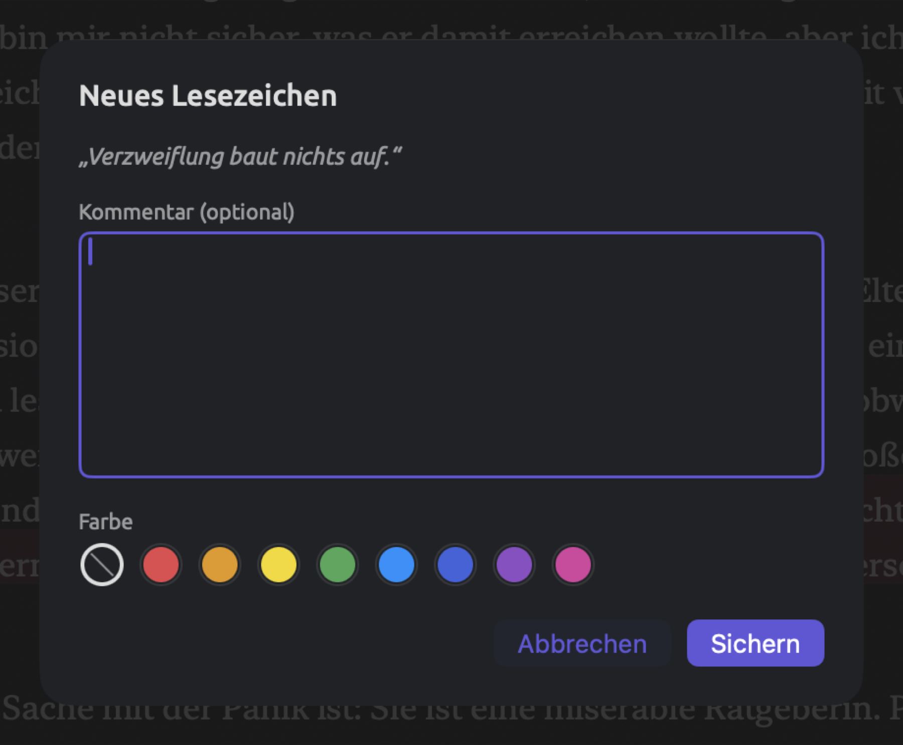
So setzen Sie in LemmaLoom ein Lesezeichen:
- Wählen Sie die Textstelle aus.
- Klicken Sie in der Auswahlleiste auf Lesezeichen, oder drücken Sie ⇧⌘B.
- Geben Sie im Dialog Neues Lesezeichen unter Kommentar (optional) eine Notiz ein und klicken Sie unter Farbe auf eine Farbe. Lesezeichen bieten Keine Farbe und die acht Farbfelder der Codes.
- Klicken Sie auf Sichern.
Ist die Lens Lesezeichen aktiviert (was beim Öffnen eines Dokuments standardmäßig der Fall ist), sind Textstellen in der Farbe ihres Lesezeichens hervorgehoben, bei einem Lesezeichen ohne Farbe gelb. Neben der Textstelle zeigt eine Annotation in der Randspalte den Kommentar, und am linken Rand der Dokumentübersicht zeigt ein kleines Quadrat, wo das Lesezeichen liegt.
Überlappt Ihre Auswahl ein Lesezeichen, steht in der Auswahlleiste Lesezeichen entfernen statt Lesezeichen. Drücken Sie ⇧⌘B, verschwindet das Lesezeichen sofort; mit dem Menübefehl Bearbeiten ▸ Lesezeichen entfernen widerrufen (⌘Z) holen Sie es zurück.
Die Lesezeichen eines Dokuments finden Sie im Inspektor unter Lesezeichen im Tab Text (siehe Die Facette Lesezeichen in Kapitel 10, Der Text-Inspektor). Jede Zeile zeigt ein Lesezeichensymbol in der Farbe des Lesezeichens, den Kommentar oder, wenn es keinen gibt, die Textstelle, und die Position. Ein Klick auf eine Zeile führt in der Leseansicht zur Textstelle; ein Rechtsklick bietet Bearbeiten (öffnet den Dialog Lesezeichen bearbeiten, der eine Schaltfläche Löschen hat) und Löschen an. Suchen findet Lesezeichen anhand ihres Kommentars oder Textes. Um Lesezeichen als CSV-Datei mit den Spalten Stelle, Text und Kommentar zu exportieren, klicken Sie auf Exportieren.
Um alle Treffer einer Abfrage mit Lesezeichen zu versehen, gibt es im Menü Aktionen der Abfrage den Befehl Treffer mit Lesezeichen versehen … (siehe Treffer mit Lesezeichen versehen in Kapitel 18, Abfrageergebnisse nutzen). Um die Lesezeichen mehrerer Dokumente gleichzeitig zu sehen, können Sie eine Abfrage erstellen, die Lesezeichen auflistet. Die Einheiten Memos, Verknüpfungen und Kodierungen funktionieren ähnlich (siehe Was gesucht wird in Kapitel 15, Eine Abfrage erstellen).
Textstellen automatisch kodieren
Automatisches Kodieren sucht mit einer Lens nach Annotationen und kodiert dann alle Textstellen, die diese Annotationen markieren, in einem einzigen Durchgang. Es eignet sich für alles, was sich anhand des Wortlauts oder grammatischer Muster finden lässt, etwa Heckenausdrücke aus Wörterbüchern oder die Ergebnisse gesicherter Abfragen. Betrachten Sie einen Durchgang als ersten Arbeitsschritt (siehe Ein Beispiel weiter unten in diesem Kapitel).
Unter den Lenses steht automatisches Kodieren nur für die zur Verfügung, die Sie selbst erstellen:
- die Lens eines Wörterbuchs, also einer Sammlung von Wörtern und Wendungen, die Sie zusammenstellen (siehe Kapitel 19, Wörterbücher);
- die Lens einer Abfrage, die als Lens gesichert ist (siehe Eine Abfrage als Lens sichern in Kapitel 18, Abfrageergebnisse nutzen);
- und die Lens eines eigenen Analysators (siehe Kapitel 20, Eigene Analysatoren).
Sie können die Textstellen, die eine Abfrage liefert, auch direkt im Inspektor automatisch kodieren.
Automatisch kodieren mit einer Lens
In „Klimadebatte“ steht das Wörterbuch „Heckenausdrücke“ in jedem Dokument als Lens zur Verfügung. Jede Kategorie des Wörterbuchs hat ein eigenes Aspekt-Lenslet, nämlich „Approximatoren“ und „Abschwächer“.
So kodieren Sie automatisch mit einer Lens:
- Öffnen Sie das Dokument und aktivieren Sie die Lens im Lens-Menü oben in der Leseansicht. Das Menü ist deaktiviert, bis das Dokument indiziert ist.
- Wählen Sie Dokument ▸ Automatisch kodieren… (⇧⌘A). Das Lens-Menü hat denselben Befehl, direkt über Annotationen deaktivieren. Sind mehrere solche Lenses aktiviert, gibt es für jede einen eigenen, nach ihr benannten Befehl, etwa Mit Heckenausdrücke automatisch kodieren…, und ⇧⌘A wählt den ersten.
- Richten Sie im Dialog Automatisch kodieren den Durchgang ein, wie unter Der Dialog Automatisch kodieren unten beschrieben, und klicken Sie auf Automatisch kodieren.
Automatisch kodieren mit einer Abfrage
Das Projekt „Klimadebatte“ enthält die gesicherte Abfrage „Dringlichkeit im Gespräch“, für die keine Kategorien definiert sind. In ihrem Dialog Automatisch kodieren gibt es eine einzige Zeile namens „Dringlichkeit im Gespräch“. Wählen Sie in dieser Zeile „Dringlichkeit“, wenn LemmaLoom die Textstellen mit „Dringlichkeit“ kodieren soll, oder belassen Sie sie bei Neuer Code: Dringlichkeit im Gespräch.
So kodieren Sie automatisch mit einer Abfrage:
- Öffnen Sie ein Dokument. Klicken Sie im Inspektor auf Multimodus und dann auf Abfrage.
- Erstellen Sie die Abfrage, oder laden Sie eine gesicherte.
- Öffnen Sie das Menü Aktionen (das ⋯ im Kreis) und wählen Sie Automatisch kodieren….
- Richten Sie im Dialog Automatisch kodieren den Durchgang ein und klicken Sie auf Automatisch kodieren.
Ob gesichert oder nicht, der Dialog verwendet die Abfrage genau so, wie sie im Abfrageeditor definiert ist. Der Befehl Automatisch kodieren… ist deaktiviert, wenn eine Abfrage es nicht erlaubt, Textstellen zu annotieren, zum Beispiel weil sie statt Textstellen Dokumente oder Codes findet oder weil Anzeigen nicht auf Liste steht. Halten Sie den Mauszeiger auf den Befehl, um den genauen Grund zu sehen. Welche Abfragen als Lenses infrage kommen, erklärt Welche Abfragen Lenses werden können in Kapitel 18, Abfrageergebnisse nutzen ausführlich.
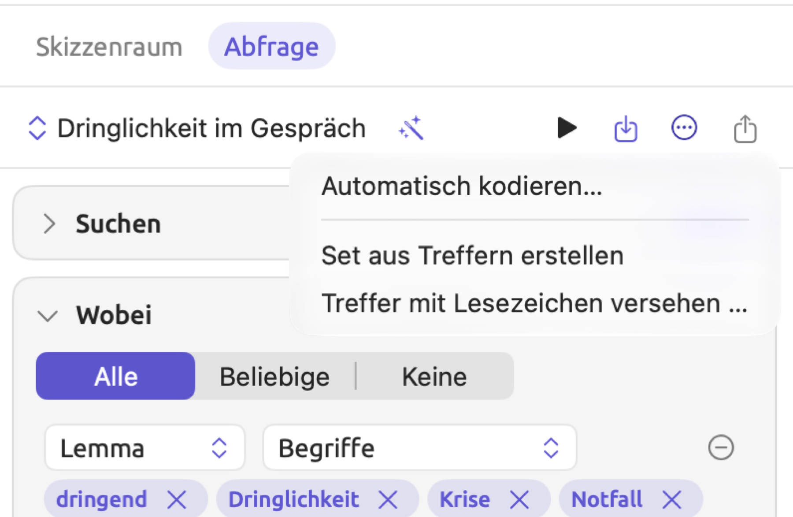
Der Dialog Automatisch kodieren
Wie die Abbildung unten zeigt, hat der Dialog für die Lens „Heckenausdrücke“ in „Die Modelle liegen daneben“ zwei Zeilen, eine für jede Kategorie des Wörterbuchs.
Die erste Zeile, Lens oder Abfrage, nennt die Lens oder Abfrage, deren Ergebnis die Textstellen liefert.
Unter Codes erhält jedes Aspekt-Lenslet der Lens eine eigene Zeile, anfangs mit Häkchen. Bei Wörterbüchern bekommt jede Kategorie eine eigene Zeile; Abfragen liefern eine Zeile pro Kategorie oder, wenn sie keine Kategorien haben, eine einzige, nach der Abfrage benannte Zeile; Analysatoren liefern eine Zeile für jeden Eintrag ihrer Legende. Nur die Aspekt-Lenslets, die in der Legende aktiviert sind, erhalten hier eine Zeile. Deaktivieren Sie ein Lenslet, bekommt es keine eigene Zeile und wird beim Durchgang übersprungen (siehe Auswählen, welche Aspekte aktiviert sind in Kapitel 6, Lenses).
Wählen Sie im Menü, das Neuer Code: … zeigt, rechts in einer Zeile einen vorhandenen Code, wird dieser Code der Zeile zugeordnet; ist kein vorhandener Code gewählt, gilt für die Zeile Neuer Code: …, womit ein Code mit Namen und Farbe der Zeile angelegt wird. Das Menü wählt einen Code mit passendem Namen bereits vor, unabhängig von Groß- und Kleinschreibung und Akzenten. Es zeigt alle Codes, die im aktuellen Dokument verwendbar sind. Entfernen Sie das Häkchen einer Zeile, wird sie beim Durchgang übergangen.
Im Menü Dokumente wählen Sie Dieses Dokument, ein beliebiges Dokumentset des Projekts oder Gesamtes Projekt. Bei Dieses Dokument erfahren Sie unter Passagen, wie viele Textstellen die Lens für die Zeilen mit Häkchen im Dokument findet. Textstellen, die den gewählten Code bereits haben, sind in dieser Zahl enthalten, werden aber übersprungen.
Automatisch kodieren ist deaktiviert, solange Textstellen geladen werden (Wird geladen) und solange keine Zeile ein Häkchen hat (Nichts ausgewählt).
Ein Klick auf Automatisch kodieren startet den Durchgang. Der Dialog bleibt geöffnet, und alle Einstellungen sind gesperrt; für einen weiteren Durchgang mit neuen Einstellungen wählen Sie deshalb erneut Automatisch kodieren…. Während des Durchgangs wird aus Automatisch kodieren die Schaltfläche Stoppen.
- Fortschritt zeigt, wie viele der Dokumente fertig sind, zum Beispiel 3 von 5.
- Stoppen beendet den Durchgang, sobald das aktuelle Dokument kodiert ist. Alle bisherigen Kodierungen bleiben erhalten.
- Am Ende zeigt Fortschritt den Text Hinzugefügte Kodierungen: mit der Zahl. Aus Automatisch kodieren wird Fertig, und ein Klick darauf schließt den Dialog.
Was automatisches Kodieren tut
- Eine Textstelle, die bereits über genau dieselbe Strecke mit dem gewählten Code kodiert ist, wird übersprungen (ein zweiter Durchgang überspringt also die Textstellen, die der erste kodiert hat). Textstellen, die von vorhandenen Kodierungen des gewählten Codes nur überlappt werden, etwa eine Textstelle in einem ganzen Absatz mit diesem Code, werden dagegen kodiert.
- Bei einem Durchgang über ein Dokumentset oder das ganze Projekt wird jedes Originaldokument der Reihe nach so behandelt, als hätten Sie es in der App geöffnet; starten Sie den Durchgang in der Übersetzung eines Dokuments, etwa in „Uns läuft die Zeit davon (Englisch)“, durchläuft das automatische Kodieren diese Übersetzung anstelle von „Uns läuft die Zeit davon“.
- Eine Lens aus einem Wörterbuch kodiert auch nicht indizierte Dokumente, weil sie direkt mit dem Text arbeitet. Eine Lens aus einem Analysator kodiert dagegen nur indizierte Dokumente, und nur in Sprachen, die der Analysator unterstützt; ein Dokument, bei dem Sie das Häkchen für diesen Analysator entfernt haben, wird übersprungen.
- Die Zeilen stammen aus dem geöffneten Dokument. Hat eine Abfrage-Lens ihre Ergebnisse mit Färben nach eingefärbt (siehe Kategorien und Färben nach in Kapitel 15, Eine Abfrage erstellen), erhalten nur die Werte, die im aktuellen Dokument vorkommen, eine Zeile, und nur diese Werte werden auch in allen anderen Dokumenten kodiert.
- Bei einer Zeile mit neuem Code legt die erste gefundene Textstelle den neuen Code auf der obersten Ebene des Codebaums an. Ein solcher Code hat den Geltungsbereich Projekt, das Format Hervorheben sowie Namen und Farbe der Zeile.
- Ein vorhandener Code, der zu einem einzelnen Dokument oder Set gehört, wird nur in diesem Dokument oder Set vergeben.
- Kodierungen aus einem automatischen Durchgang haben keine Attributwerte, auch bei Codes mit Attributen.
- Wie jede Kodierung von Hand werden neue Kodierungen auch in die Übersetzungen des Dokuments übernommen.
- Der ganze Durchgang ist ein einziger Schritt im Widerrufverlauf; Bearbeiten ▸ Automatisch kodieren widerrufen (⌘Z) entfernt daher jede Kodierung, die er hinzugefügt hat, und jeden Code, den er angelegt hat, auch solche, die vor einem Klick auf Stoppen entstanden sind.
Ein Beispiel
Das Wörterbuch „Heckenausdrücke“ hat zwei Kategorien: „Approximatoren“ mit Einträgen wie etwa, ungefähr und rund sowie „Abschwächer“ mit ich glaube, vielleicht und wahrscheinlich. Die skeptischen Dokumente enthalten weit mehr Heckenausdrücke als die aktivistischen; kodieren Sie die Heckenausdrücke des Sets „Skeptiker“, stehen sie deshalb neben Ihren vorhandenen Codes in den Code-Tabellen.
Ist „Heckenausdrücke“ in „Die Modelle liegen daneben“ aktiv, öffnet Dokument ▸ Automatisch kodieren… den Dialog aus der Abbildung oben. Die beiden Zeilen, Approximatoren und Abschwächer, bieten Neuer Code: Approximatoren und Neuer Code: Abschwächer an, weil es im Projekt noch keine Codes mit diesen Namen gibt. Bei Dieses Dokument zeigt Passagen insgesamt 7 Textstellen, nämlich 2 Approximatoren und 5 Abschwächer in „Die Modelle liegen daneben“. Entfernen Sie das Häkchen bei „Abschwächer“, sinkt die Zahl auf 2.
Haben beide Zeilen ein Häkchen und stellen Sie Dokumente auf Skeptiker, zählt Fortschritt die fünf Dokumente dieses Sets durch und endet bei Hinzugefügte Kodierungen: 39. Davon entfallen 7 auf „Die Modelle liegen daneben“ und 32 auf die übrigen Dokumente. Danach enthält das Codebuch zwei neue Codes auf oberster Ebene, „Approximatoren“ und „Abschwächer“, in den Farben der Kategorien des Wörterbuchs. Bei einem Durchgang über ein Set, das „Uns läuft die Zeit davon“ enthält, erhält „Uns läuft die Zeit davon (Englisch)“ Kopien dieser Kodierungen, während Hinzugefügte Kodierungen: nur die Originale zählt.
Öffnen Sie den Dialog erneut, sind „Approximatoren“ und „Abschwächer“ bereits gewählt, weil die Namen übereinstimmen. Nach einem weiteren Durchgang zeigt Fortschritt Hinzugefügte Kodierungen: 0; es gab also keine weiteren Textstellen zu kodieren. Bearbeiten ▸ Automatisch kodieren widerrufen direkt nach dem ersten Durchgang löscht alle 39 Kodierungen und die beiden Codes.
Jeder Treffer wird kodiert, ob er passt oder nicht. In „Die Modelle liegen daneben“ wird der Eintrag etwa aus „Approximatoren“ in „Vor etwa zwölf Jahren“ kodiert, wo er ein Heckenausdruck ist. In „Wissenschaft ist nie abgeschlossen“ wird dagegen der Eintrag wahrscheinlich aus „Abschwächer“ in „für wie wahrscheinlich er es hält“ kodiert, wo er keiner ist. Lesen Sie die kodierten Textstellen sorgfältig durch und löschen Sie falsche Treffer in der Facette Kodierungen oder in der Ansicht Kodierungen.
Kodierarbeit widerrufen
Jede Änderung an Codes, Kodierungen, Memos, Verknüpfungen oder Lesezeichen machen Sie mit Bearbeiten ▸ Widerrufen (⌘Z) rückgängig, und mit Bearbeiten ▸ Wiederholen (⇧⌘Z) stellen Sie eine widerrufene Aktion wieder her. Das Menü nennt die Aktion, die widerrufen oder wiederholt wird:
| Aktion | Menübefehl |
|---|---|
| Einen Code anlegen, bearbeiten oder verschieben | Neuer Code widerrufen, Code bearbeiten widerrufen, Code verschieben widerrufen |
| Einen Code zusammenführen oder löschen | Zusammenführen widerrufen, Code löschen widerrufen |
| Ein Code-Set anlegen, umbenennen, füllen oder löschen | Neues Code-Set widerrufen, Umbenennen widerrufen, Zu Code-Set hinzufügen widerrufen, Aus Code-Set entfernen widerrufen, Code-Set löschen widerrufen |
| Einen Code vergeben, ändern oder entfernen | Code anwenden widerrufen, Code ändern widerrufen, Kodierung löschen widerrufen |
| Einen Attributwert einer Kodierung ändern | Wert festlegen widerrufen |
| Automatisch kodieren | Automatisch kodieren widerrufen |
| Memos | Neues Memo widerrufen, Memo bearbeiten widerrufen, Memo löschen widerrufen |
| Verknüpfungen | Neue Verknüpfung widerrufen, Verknüpfung bearbeiten widerrufen, Verknüpfung löschen widerrufen |
| Lesezeichen | Lesezeichen widerrufen, Lesezeichen bearbeiten widerrufen, Lesezeichen entfernen widerrufen |
Wie der Widerrufverlauf zwischen Fenstern funktioniert und wann er geleert wird, erfahren Sie in Kapitel 23, Widerrufen und Wiederholen.